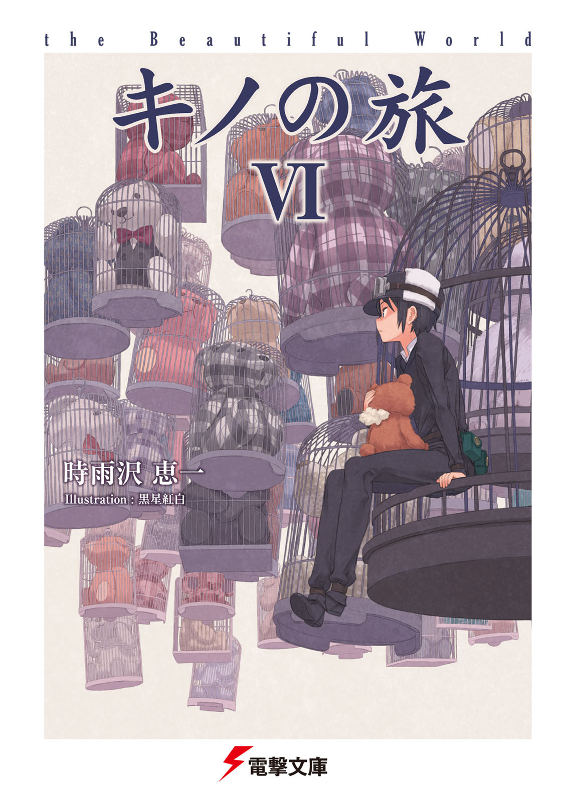
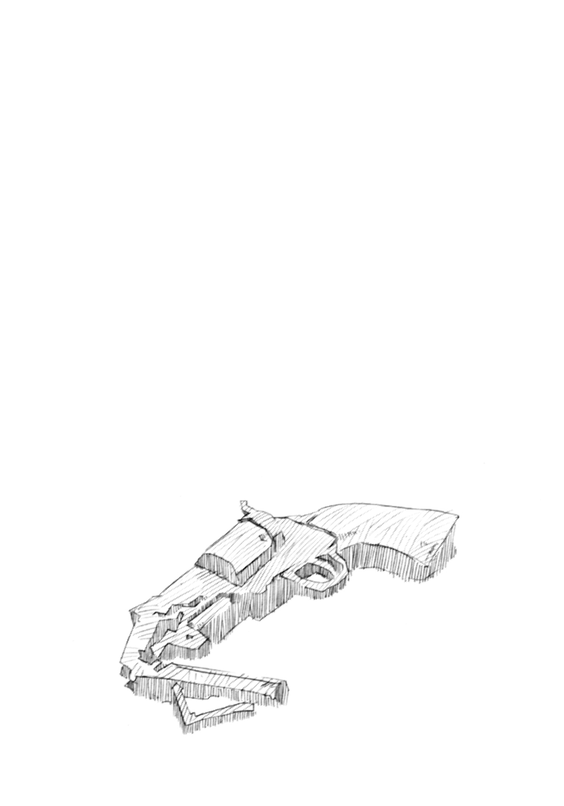

| キノの旅VI the Beautiful World | |
| 時雨沢恵一 | |


本書（電子版）に掲載されているコンテンツ（ソフトウェア／プログラム／データ／情報を含む）の著作権およびその他の権利は、すべて株式会社ＫＡＤＯＫＡＷＡおよび正当な権利を有する第三者に帰属しています。
法律の定めがある場合または権利者の明示的な承諾がある場合を除き、これらのコンテンツを複製・転載、改変・編集、翻案・翻訳、放送・出版、公衆送信（送信可能化を含む）・再配信、販売・頒布、貸与等に使用することはできません。
プロローグ 「誓い・ｂ」
─a Kitchen Knife・b─
そして、そして......。
いや、もう何を書いたらいいのか分からない。
また泣きそうだ。
頭の中が、またあの、バケットの風景を思い出して、同じように滲む。
何て幸せなんだろうか。
私は何て幸せなんだろうか。
絶対に忘れない。この日のことは絶対に。
他に何を書こう？
他に何が書ける？
他に何か書いておきたいことはないか？
今日が素晴らしい日であること。それはもう何度も書いたか。何度書いても書き足りない気がすることは書いていないか？
素晴らしいもの。美しいもの。宝物。失いたくないもの。命を賭しても守りたいもの。いつまでも一緒にいたいもの──。
ああ、今さら沸々とまた喜びが湧いてきた。今が深夜でなければ、窓の外へ大声で叫んで、踊り出したい気分だ。
一生、一生この感動は忘れない。一生だ！
ああ、何て私は幸せなんだろう！
今日は素晴らしい日だ。
いいや、これからもだ。これからずっとだ。
だめだ、混乱してきた。まともに書けそうもない。
もう終わる。無理やり終わらそう。
第一話 「彼女の旅」
─Chances─
深い緑色をした豊かな森と、澄んだ水が蒼い空を映す湖達の中に、一つの国があった。
広い国の中にはビルが建ち並び、大小さまざまな道路が、クモの巣のように張り巡らされている。
国の西側。城壁に、門があった。城門の脇には、出国手続きをするための部屋が備えてある。
部屋から少し離れた場所、ロータリー広場になっている場所に、一台のモトラド（注・二輪車。空を飛ばないものだけを指す）がとまっていた。後輪脇と上に旅荷物を積んだモトラドだった。
モトラドに、一人の人間が寄りかかっていた。黒いジャケットを着て、腰をベルトで締めて、右腿にハンド・パースエイダー（注・パースエイダーは銃器。この場合は拳銃）を吊った、モトラドの運転手だった。年は十代の中頃。短い黒髪に、大きな目と精悍な顔を持つ。鍔のある帽子をかぶって、ゴーグルをそこに載せていた。
その広場には、他には誰もいなかった。鳥が数羽、餌を求めて跳ねていた。東側の城壁のすぐ上にある太陽が運転手の背中を暖めて、長い影だけを城門に入れていた。
「まだ？ キノ」
モトラドが聞いた。
「まだだよ。さっき聞いてから全然経ってないぞ、エルメス」
キノと呼ばれた運転手が答えた。
騒音と共に、がらがらの道路に清掃車が一台やって来た。
清掃車は鳥を追い立てて、広場脇の太い道を濡らして、そして去っていった。
影が少し短くなって、
「まだ？」
再び、エルメスと呼ばれたモトラドが聞いて、
「まだ」
キノが短く答えた。答えた後すぐに、城門脇の部屋の扉が開いた。
「ん？ 終わったかな？」
エルメスが言って、一人の男が出てきた。
男は三十代半ばほど。野外で動きやすいように、丈夫そうで動きやすそうな服に、いろいろなものを身につけられるようにポケットがいくつもついたベストを着ていた。背中に、ライフルタイプのパースエイダーを背負っていた。
それはボディがプラスチック製の軍用ライフルで、暗視装置とレーザー・サイトが組み込まれた狙撃用スコープがついていた。
男がキノ達に気がついて、数歩歩いて近づき、朝の挨拶をした。キノがエルメスから立ち上がって、挨拶を返す。
「出国待ちかい？ 悪いけれどもう一人いるんだ。もう少しかかる。書類審査が面倒で」
男が言った。エルメスが聞く。
「この国の人？ 旅に出るんだ」
「ああ......、そうだよ」
男が、少し顔を曇らせて答えた。
エルメスはなんの遠慮もなく、
「でもって見送りは誰もなし？ 冷たい人達だね」
「厳しいなあ......」
男は渋い顔で答えて、一度自分が出てきた部屋を振り向いた。扉は閉まっていた。
「複雑な事情、そうですね」
キノが言って、男はまあねと言って頷いた。
「誰にも言えなかったけれど......、君達のような外の人ならいいな。一人くらいは、この話を知ってくれていてもいいと思う。待つ間の暇つぶしでもいい。聞いてくれるかい？ ──なぜ私が、旅に出るか」
男が、キノを真っ直ぐ見て、そう訊ねた。
キノは帽子の鍔を少し上げて、
「ええ。どうぞ」
男が、少し表情を曇らせて、それから軽く笑った。それはね、と小さく前置きして、
「許してもらうためだ。一生をかけて」
「許してもらう、ですか？」
「なにそれ？」
キノとエルメスが聞いた。
男の口元が、笑みのような、もしくは苦みを感じているような形へと変わる。
「自分でも、変な理由だと思うよ......。でも、必要なんだ......。私には必要なんだ......」
数秒の静寂があって、エルメスが聞く。
「もう終わり？」
「あ、いや──。どこから言おうかと思ってね。私と一緒に旅をするのは、今出国審査を受けているのは、一人の女性だ」
「相棒？」
「そう、だな......。その人が、私を旅に誘った......。一緒に旅をして、彼女が困った時に護衛してくれるようにと。そして......、なぜかと言うと......」
男が、静かな口調で言う。
「私は昔、彼女の恋人を殺した」
「............」「はい？」
「七年前のことだ。彼女とはまったく面識がなかった頃のことだ。私は、過ちを犯してしまった......。車を運転していて、そしてそれは、違法である酒を飲んだ後の運転で、注意力も認識力も落ちていた......。速度を出しすぎて、交差点を曲がりきれなくて......」
「うん、それで？」
「それで......、家にぶつかった......。それだけじゃなかった。車と家の間に、一人、歩道を歩いていた人を挟んでしまった......。結果、何の落ち度もない人を殺してしまった......」
男が眩しい朝日を見上げて、細く息を吐いた。
「それから、私は逮捕されて、裁判になって......。その時、その男の人の恋人という女性に、面と向かって罵られた。『人殺し！ あの人を返してよ！』って。当然だな......。それだけのことをしたんだから......。それが、彼女と初めて会った時のことだ......」
小さく肩を落とした男に、エルメスが言う。
「暇つぶしで聞くにしては、ちょっとベイビーな話だね」
「......ヘビーな？」
「そうそれ」
そう言ってエルメスは黙った。
キノが聞く。
「なるほど。それからどうしました？」
「私は十年の刑期が確定して、交通刑務所に入った。仕事も生活も全て失った。まあ、既に両親も亡くなっていて独り身だったから、悲します人は少なかったけれどね」
「計算合わないよ。脱獄したの？」
エルメスが楽しそうに言って、男が笑顔で首を振る。
「まだ続きがあってね。刑務所で私は、自分のしでかしたことを本当に悔いた。そして、彼女に手紙を出した。その中で、ただひたすらに謝った。このことは一生をかけて償いたいと、素直な気持ちを書いた」
「ふむふむ。それで」
「それで、まったく返事はなかった。それでも、私は月に一度必ず出し続けた。悔やみ、贖罪を続けている自分の気持ちを、少しでも知ってほしかった。刑務所で貰っていた大したことのないお金も、いつも一緒に送った」
男が一度振り返る。鮮やかな朝日に照らされる部屋の扉は、閉まったままだった。
「六年が過ぎた時のことだ。もう私は、刑務所での生活もすっかり慣れてしまって、普通の、自由な生活を忘れかけていた。そんな時、突然彼女が、初めて面会に来た。驚いたよ。とても驚いた......。ガラス越しに彼女を見て、持ってきた開封済みの手紙の山を見て......、私は泣きながら謝った。読んでいてくれていたことだけでも分かって嬉しかった。でもそれだけじゃなかった。彼女は顔を上げてくださいって言って、とても予想もできなかった提案をした」
「国の外に出ることですね」
キノが、確認するために言った。
「そう。──彼女は、この国を出たいと言った。辛い思い出があるからだと言った......。別の国へ行き、人生をやり直したいと。そして私に、旅の護衛が必要だから、一緒に来てほしいと言った。残刑期が五年以下なら、絶対の再入国禁止を条件に国外に出ることができるらしい。国外追放処置があった頃の、古い法律の抜け穴だった。私はこれ以上ないほど驚いて、聞き返した。『一緒に来てほしいだなんて、私を恨んでいないんですか？』ってね」
「すると？」「それで？」
「彼女は、こう言った。『恨みや憎しみは消えない。でも、あなたは一生をかけて、それを償ってくれると手紙で約束してくれた。だから』って──」
「どうしました？」
「悩んだよ。猛烈に悩んだ。あと四年経てば、私は刑務所を出ることができる。それに、大好きな故郷を永遠に捨てて旅に出るなんて、まったく考えたこともなかった。生まれ育った、両親が眠るこの国の中で死んで、同じ墓に入りたいと思っていた。出所した後、自分の人生を、がんばってやり直したいと思っていた。でも──」
「でも？」
「一生をかけて自分の罪を償う......、そのためには、それも一つの方法だと思った。そして何よりそれは、彼女自身が望んでいる方法でもあった。私は、およそ一年悩み通して、最後はその提案を受け入れた。二度とこの国に戻らず、いつまで続くか分からない彼女の旅に、護衛としてついていくことにした。そのことを、面会で彼女に伝えた。静かな笑顔で『ありがとう』って言われた時の気持ちは......、とても説明できないよ」
男はそして、目頭を急に押さえた。ちょっとごめん、と言って、キノに背中を向けた。
「この国の中で泣くのは、これが最後だろうね」
男は小声で言った。
部屋の扉は開かずに、しばらく時間が流れて、男は一度空を見上げた。
男が、キノとエルメスに振り向いた。
「まだだと思うんだ」
男が言った。
「私はまだ、彼女に許されてなんかいないと思う。だからこれから、一生をかけて償う。どこまで行くのか分からない。きっと長い旅になると思うよ。でもそれは、私の旅ではなくて、彼女の旅だ。そしてそれが、私の人生の旅だと思っているよ......。これから、出発なんだ」
「なるほど。よく分かりました」
キノが、再び泣き出しそうな顔をしている男に言った。
「ま、人生人それぞれってヤツだね。うん、なかなか面白かった」
エルメスが言った。
男は少し笑って、キノに向かって、
「聞いてくれてありがとう。旅の先輩の君に、一つ聞いていいかな？」
「なんでしょう？」
「旅で、一番気をつけなくちゃいけないことって、何かな？」
「簡単ですよ。普通に国の中で生活している時のそれと、同じです」
キノはすぐに答えた。
「何？」
「命をなくさないことです。もしくは、殺されないことです。つまり自分の命を守るために、その場に即した最大限の努力をすることです。──もっと言うのなら、殺される前に殺すことです」
「............。分かった......」
部屋の扉が開いた。
男と同じ年頃で、腰に小さなハンド・パースエイダーを下げた、男と同じ様な服装の女性は、男がキノ達を紹介すると、楽しそうに微笑んだ。
そしてキノ達が同じ方角へ行くことを知って、もし私達の足が車だったら一緒に行けたのにねと、少し残念がった。
「でも、私にはとても頼もしい護衛がいるから」
女性は笑顔で言った。それからほんの少し悲しげな顔をしている男を見て、彼に向かっても、微笑んだ。
「ねえキノさん。キノさん達が審査を終えて、そして私達に追いついたら、一緒にお昼を食べましょう。湖のほとりで休憩していると思うわ」
そう言われて、キノが、
「いいですね」
素直に言った。
荷物を積んだ馬が外で待たせてあるからと言って、
「じゃあ、行きましょう」
一人が言って、もう一人がゆっくりと頷いた。
二人は、城門をくぐっていった。
「もらえる物は、もらえるとしたら、もらっておくか。昼までに追いつけるようにしよう」
城門脇の部屋へとエルメスを押しながら、キノが言った。
「キノはがめつい」
エルメスが言って、
「まあね......」
キノが言った。
キノとエルメスが出国したのは、昼前だった。
森の中に、道があった。土の道で、車が楽に走れるほど広い。
キノはかなりのスピードで、エルメスを走らせていた。
両側に木の壁が続き流れ、時折美しい湖水の蒼が現れては消える。太陽は高いところにあって、葉と枝の隙間から光っていた。
「カーブ抜けた先」
エルメスが言って、キノはアクセルを戻した。
先がよく見えないカーブを抜けて、道の左側に湖畔の砂浜があった。そこに馬が二頭繫がれていて、二人の人間が座って休んでいた。
キノがギアを落としながら近づいて、一人の、ライフルを背負った男が手を振った。
キノが、二人のだいぶ前でエルメスを止めて、スタンドで立たせておりた。歩きながらゴーグルを外して、首にかけた。
「今日は。追いつきましたよ」
男が手にしていたカップを置いて立ち上がって、
「やっぱりモトラドは速いな。今ちょうどお茶を入れたところだよ」
女性に背中を向けて、キノに二歩近づいた。
女性は、腰から小さなハンド・パースエイダーを抜いた。ゆっくりと立ち上がった。パースエイダーを両手で構えて、目前の男の背中に狙いを向けて、
ぱん。
そして撃った。空薬莢が飛んで、弾丸は男の肩に当たって穴を開けた。キノは一歩飛ぶように下がっていて、
「がっ！」
男が悲鳴を上げて、体を反らせた。
ぱん。
二発目が撃たれて、男の右腿に当たって、
ぱん。
三発目は左腿に当たった。
男は、すぐにバランスを崩して、背中のライフルを下敷きにして倒れた。
そのバレルを、小走りに近づいた女性が踏みつけた。すぐ下の男の右腕に一発、左腕に一発、
ぱんぱん。
立て続けに撃ち込んだ。
撃たれるたびに、
「ぎゃあ！」
男が反射的に叫んだ。
女性が男のライフルを引っぱり出して、拾った。自分の後ろへ置いた。
数カ所を撃たれて仰向けに倒れ、地面へと大量の血を染み込ませている男は、驚き惚けた表情で、
「あ......、なんで......？ 何が......？」
自分の脇に立って見下ろしている女性を見て、聞いた。
女性は、何一つ表情を変えずに、淡々と言う。
「もちろん私が撃ったのよ。痛いかしら？」
男が小さく頷いた。
女性は一度頷いて、既にエルメスの脇まで下がっていたキノに聞く、
「キノさん。彼を救うために、私を撃ちますか？」
キノは、右腰の『カノン』へ手を伸ばしたままで、静かに首を振った。
女性は、男へと視線を戻した。
「な......、んで......？」
男の顔に苦痛と恐怖と疑問と、脂汗が浮かんでいた。
「なぜ撃ったか──、かしら？」
男が目を見開いたまま頷いた。
「もちろん、あなたを殺すためよ」
「なん......、で？」
「あなたが許せないから。あなたが、私の一番大切なあの人を殺したから。許せないわ」
「............」
「それだけじゃないわ。あの毎月の手紙。謝罪の言葉がたくさん書いてあって、〝どうか許してください。一生ご冥福を祈って過ごします〟だなんて。私にとっては、自分勝手なことを書き連ねているようにしか思えなかったわ。──いいえ、それで許せる人も、世の中にはいるのかもしれないわね。加害者から懺悔の手紙をもらって、〝ああ、この人も苦しんでいるんだ。きっと私と同じ被害者なんだ〟──そう思う人もいるかもしれないわね。その人がそれでよければ、それはそれで、いいのかもしれないわ。その人が〝間違っている〟なんて言うつもりは、私には微塵もない。ただ、私は違うの。あの人をあなたに奪われた苦しみは、時が過ぎるごとに大きくなっていった。あなたからの手紙が届くたびに、どんどん膨らんでいったのよ。あなたからの手紙を見るたびに、あの人を殺したあなたが、まだのうのうと生きていることを再認識して、悲しくなって、許せなくって......、そして、復讐の決意を固めていったの」
体を動かせず、ゆっくりと顔から血の気が引いていく男へと、
「ねえ──」
女性は顔色を変えずに、興奮した様子もなく、話し続けた。
「私はこう思うの。あなたは、〝自分は反省しています〟って被害者の遺族に訴えかければ、〝いいことをしているから自分は救われる〟とでも思っていただけなんじゃないかって。それはあなただけが気持ちいい、自慰行為以外の何ものでもないわ。それに、私が絶望で苦しんでいた時、あなたは何をしていた？ 安全な刑務所で、規則正しい生活をして、飢えることも震えることもなく生きていた。そして十年経てば晴れて自由の身。もう何も気にして生きる必要はない。そうなって、あの人を殺したあなたが、笑顔で恋人と町を歩いているなんて──、そんなのが許せると思う？ 私は許せないわ」
「で、でも......」
男が口を開いて、
ぱん。
女性が男の耳を撃った。耳たぶが裂けて、他の傷に比べれば大したことのない量の血が流れ始めた。
「最後まで話を聞いて。──だから私は復讐を果たすことにした。あなたを国外に、国の法が及ばないところに誘い出して、あの人に代わって自分の手で殺す。その計画を立てた。そのために必要なことは全てやったつもり。あなたを前にして冷静な態度がとれるように、感情を押し殺して目的のためだけに行動できるよう訓練を重ねた。静かな作り笑顔の練習もした。──それから、旅に出る資金を稼ぐために、必死になって働いた。本当は大嫌いで、一生触ることはないだろうと思っていたパースエイダーを購入した。これには、あなたから送られたお金を使ったわ。時間をかけて、しかも確実に殺すための射撃練習もした。撃たれたら一番痛い弾は何か教わった。どう？ 効いているかしら？ 聞いてる？」
女性が、男の顔を上から覗き込んだ。
男は仰向けのまま。ぴくりともせずに、開いた両目から両側のこめかみへと、涙を流していた。
「いやだ......」
小さな声がした。
「いやだ......。こんな......。いやだ......。死にたくない......。こんなところで......。いやだ......。国に戻りたい......。死にたくない......」
「あの人も、きっとそう思っていたのよ」
女性が言った。それから女性は、ハンド・パースエイダーの安全装置をかけて、ホルスターにしまった。振り向いて、男のライフルを拾い上げた。慣れた手つきで安全装置を外して、大の字に横たわる男の足下に立った。
ライフルを腰に構えて、スコープ脇のレーザー・サイトのスイッチを入れると、男の顎にぽつんと小さな赤い点がついた。
「......ゆ、許して、ください......」
すっかり色をなくした唇を小さく動かして、男はつぶやいた。
女性は満足そうに、とても満足そうに何度か頷いて、静かな笑みを見せた。
「ええ。実は私、あなたを許したいの。ずっと許したかったの。あなたは書いてくれた。『これから一生をかけて、償う』って。だからわたしはあなたの一生を終わらせる。──早い方がいいでしょう？」
撃った。
撃つたびに、反動で女性の体は少し後ろへと押された。それを押さえながら、女性は撃ち続けた。
深い緑色をした豊かな森と、澄んだ水が蒼い空を映す湖の間に、二人の人間が立っていた。
二頭の馬が繫がれていて、一台のモトラドがあって、──そして首から上のない人間が一人、仰向けに横たわっていた。
女性は、ゆっくりとしゃがんで、弾倉が空になったライフルを地面に置いた。
今の空にも似た、晴れ晴れとした表情をしていた。幸せそうな顔をしていた。
「ああ......」
女性が男に言う。
「私、やっとあなたを許すことができる。よく聞いて。私、あなたを許すわ。それはあなたが望んでいたことでしょう？ あなたが心から望んでいたことなんでしょう？ その願いを、かなえてあげられる。あなたを許すわ。あなたを許す。ねえよく聞いて、──私は、あなたを許すわ」
湖畔に新しい土盛りが一つあった。ライフルが一丁、墓標として刺さっていた。
その前で女性は跪いて、顔の前で両手を組んで、祈っていた。
やがて立ち上がると、振り向いて後ろにいた人間に訊ねた。
「キノさん。あなたは、私を撃とうと思えば撃てた。どうして？」
「ボクは神様ではありませんから。それだけです」
「そうそう。キノはキノ」
エルメスが言った。
「そう。──お墓を作るのを手伝ってくれてありがとう」
「どういたしまして」
女性は、全ての馬具が外された男の馬へと近づき、優しく語りかける。
「もうあなたは、好きなところへ行きなさい。森の中で自由に生きるもよし、城門に戻って誰かのために生きるもよし」
そして軽く叩いた。驚いた馬は少し進んで、一度振り向いて、それから森の中に去った。
「これから、どうされます？」
キノが女性に聞いた。
「私の旅は、もう終わったわ。だから国に戻って、死んでしまった人の思い出と一緒に、死ぬまで生きるつもり」
「そうですか。お気をつけて」
「ありがとう。あ、お昼ご一緒できなくてごめんね」
「いいですよ」
女性は埋めなかった物、自分の荷物をまとめて、自分の馬にくくりつけた。それから軽々とまたがって、
「さようなら」
笑顔で手を振った。
彼女を乗せた馬は、カーブの木々の向こうへと消えていった。
「ふう......」
キノが息を吐いた。
「本当に、キノの言ったとおりになったね。少し驚いたし、感心したよ」
エルメスが楽しそうに言って、
「そうだね......。さて、もらえる物は、もらえるからもらっておくか」
「キノはがめつい」
エルメスが言って、
「まあね......」
キノが言った。
モトラドが走り去った湖畔には、新しい土盛りがあった。
そこに、ライフルが一丁、墓標として刺さっていた。
ボディがプラスチック製の軍用ライフルで、スコープはついていなかった。
第二話 「彼女の旅」
─Love and Bullets─
ビルのような岩が、砂地に立ち並んでいた。
風雨による浸食をものともしなかった岩石の柱が、平らな大地に幾百もそそり立ち、異様な空間を作りだしていた。
乾いた砂地には、細い草が申し訳程度に生えるだけ。時折熱く乾いた風が、柱の間を通り抜けていく。空には雲一つない。
ある岩の柱の脇に、三人の人間がいた。短い影の中で座っていた。
一人は、白いシャツに黒いベストを着た若い人間で、右腿にハンド・パースエイダー（注・パースエイダーは銃器。この場合は拳銃）を吊っている。後ろには、旅荷物をたくさん積んだモトラド（注・二輪車。空を飛ばないものだけを指す）が、センタースタンドで止めてあった。
二人は、薄手の服を着た、二十代後半ほどの男女だった。女性は、長い髪を後ろでまとめた細面。対照的に男は、鍛えられた体格のいい体。二人の後ろには、同じように荷物を積んだ二頭の馬がいた。
「それで、大切なお話とは？」
若い人間が聞いた。
「それはね、これからのキノさんに、暴力の使用を止めてもらいたいの。そのための私からの訴え」
女性が言った。キノと呼ばれた人間が少し驚きを顔に出す。
女性は真剣な表情で、キノを真っ直ぐ見据えて、
「人はね、暴力ではなく、優しい気持ちと心の底からあふれる愛で、争いごとを避けるべきだと思うの。私はそれが絶対唯一の正義だと思うの。キノさんに、そのことを知ってもらって、これからの旅でそれを実践してもらいたいの。それは決して難しくないわ。愛は全ての問題を解決するのよ」
話す女性の後ろで、男は黙ったまま座っていた。何一つ口出しせず、静かに微笑んだまま、見守るように座っていた。
「考え方を押しつけるようだけれど、でもね、この世界の人間全員が一つの考え方を持つことは、不可能ではないと思うの。例えば水。どんな人だって、のどが渇いたら水をほしがるでしょう？ それは共通の考えでしょう？ それとまったく同じように、〝人と人との間に争いはいけない。愛をもって解決に当たる〟って共通の考えを、人間は持てると思うの。そして──」
女性は、熱烈な口調で、
「──だから結局最後に求められるのは愛なのよ。他人を慈しむ心。一番必要なのは愛。人の中にあるもの。素晴らしいもの。誰でも持っている愛を使って、争いをなくしてしまえば、私達の生活は──」
途中額に浮いた汗をぬぐおうともせずに訴える。
「──こうなるともう、なぜ人間が武器を持っちゃいけないか分かるわよね。戦う必要がないと認識するのなら、武器なんていらないわ。今の世界をもう一つ上にする、だから一つの思想、一つの理念の愛のもとなのよ。みんなが一つの方向へ進んでいけるなら、要らないものを捨てて身軽になった体が、ただ愛だけを持っていける可能性が捨てられなくて！ いつも、そんな人と接していくのがポイント！ これが──」
キノは、静かに女性の、時折意味の通る文章になっていない熱弁を聞いていた。彼女の目を見ながら、小さく頷いていた。
「──つまり人は争いをなくして生きていける。その実践が、私なの！ 私は武器を一切持たないわ。私はいろいろな人に旅の途中で会って、一度も危険な目にあったことはないわ。後ろの彼は持っているけれど、狩りの時以外使ったことはないわ。これって凄いと思わない！ それは私が愛で人に接しているから、みんなも私に暴力を振るおうって気にならないのよ！ 素晴らしいと思わない！ みんな分かってくれるのよ。人は分かり合えるの！ だからね──」
女性は必死になって、彼女の考え方を語り続けた。延々と、語り続けた。
やがてしばらく時間が過ぎて、
「──そう！ これで私の言いたいことは全て！」
汗だくの女性が、大演説を終えた。大きく息を吐いて、後ろから男が渡した、すっかり冷めたお茶を飲んだ。
「もしよかったら、あなたの、今の考えでいい──、聞かせて」
キノは、そう質問した女性を見て静かに言った。
「すてきだと思います。ボクは、あなたの言うこと全てが身に染みて分かりました。ボクは今まで、自分の命を守るためなら遠慮なく撃ってきましたけれど、ひょっとしたら、必要のないことだったのかもしれません」
「そう！ そうよね！」
女性が嬉しそうに、跳ねるように言って、
「これから、ボクもあなたの言う〝愛〟を使って、人を傷つけることなく生きていこうと思います。今度入った国で、パースエイダーを売ってしまうという方法もありますね」
「そう。分かってくれたのね。嬉しいわ！」
女性が目を細めて、キノの前に来て両手をしっかりと握った。
「嬉しい！ 会えてよかったわ！ キノさん。これから、もし昔のキノさんみたいに、暴力を肯定する人がいたら、愛と真理に目覚めていない人がいたら、この考えを教えて！ そうやってみんながみんなに教え合っていけば、ねずみ算式に目覚める人が増えていって、全ての人間が争いの解決としての愛を手にするなんて本当にすぐよね！ ねっ！ ああ......、話を聞いてくれてありがとう！」
「それでは、ボク達はこれで失礼します。道中お気をつけて」
キノはそう言って、立ち上がった。モトラドのスタンドを外す。
「ありがとう。きっとうまくいくわ。またどこかで会いましょう！」
女性が楽しそうに手を振る。キノは一度二人に会釈して、モトラドを押して、岩山の下から砂地へと出た。
「行くかエルメス。だいぶ時間をとった」
モトラドに小さく言って、
「あい」
エルメスと呼ばれたモトラドが、小さく答えた。
男が思い出したように立ち上がると、
「キノさん達に道を教えてくるよ」
女性にそう言って、キノの後を追った。
その男の腰のベルト左右に、ハンド・パースエイダーが二丁、両手で撃つように、ホルスターに収まっていた。四五口径の自動式で、弾倉は延長されて増やされている。バレル先端に、サイレンサーをつけるためのネジ山があった。
男は、女性から離れたところでエルメスのエンジンをかけようとしていたキノに近づいた。
そして話しかける。
「キノさんにエルメスさん。おもしろくない話を長々と聞いてくれてありがとう。それに、彼女を喜ばせてくれてありがとう。感謝するよ」
男は、笑顔で言った。キノが苦笑した。
「あなたが後ろにいなければ、途中で立ち去っていたかもしれません」
「あはは。そう言うと思ったよ」
男が、とても楽しそうに笑った。
キノが、ほんの少し目を細めて、小声で言う。
「一週間前に見た、岩場で死んでいた十三人の男。全員が一発も撃たずに殺されていて、頭蓋骨に四五口径の弾痕が。──あなたですね」
男は頷いた。
「彼らは話を聞いてくれたけれど、その後なんとかして私を殺して彼女を襲おうと、いつまでも後をつけてきたからね。静かになってもらった」
男が、顔色一つ変えずに言った。
「失礼かもしれませんが......、あなたほど腕のたつ人が、なぜ彼女の護衛を？」
「そうそう、疑問だね。まるで考え方が違うじゃん」
キノとエルメスが聞いて、
「好きだからさ」
男は真顔で即答した。
「はい？」「へ？」
「彼女のことが、昔から好きだからだ。──私と彼女は、同じ国に生まれて、幼い頃から仲良く育った。彼女は昔から、暴力反対を金科玉条にしていた。どんな時でも暴力はダメで、愛があれば全て丸く収まると。私はまったくその逆で、力のない者は何もできない。そして弱い者を守れないと信じて、武術やパースエイダー、その他戦うために必要なありとあらゆるものを習った。学校を出て軍に入った。彼女のことは、訳の分からない考え方に浮かれた変な人だと思っていたよ。そしていつからだろうか。私は彼女のことが、心の底から好きになっていた。理由なんかどうでもいい。彼女のことが好きなんだ。休暇で実家に戻って彼女に会って、暴力の愚かさを説かれることが、当時は何より楽しかった」
男は、ちらっと後ろを振り返った。岩の脇で座って、満足そうに空を眺めている女性を見た。
「大人になって、彼女はある時突然、『国の外へ出て、愛と非暴力を伝える旅をする。それが私の使命』なんて言い出した。周りが必死になって止めるのも聞かずに、出発の準備を始めた。私は軍をやめて、彼女の旅に同行したいと願い出た」
「よく、許されましたね」
キノが聞いた。
「簡単さ。『素晴らしい考えに感動したから軍を抜けた。一緒に愛と非暴力を訴えかけよう。荷物持ちでもなんでもするから連れていってほしい』って言った。すぐに了承されたよ」
「はあ......」「なるほどねえ」
「彼女の考え方や理想をまるっきり実践できなくても、いつも前向きな彼女を見ているのは好きだ。夢に向かって暴走気味に突っ走る彼女を見ているのが好きだ。そんな彼女を守りたい。──そのためなら、私は主義思想関係なしに、彼女のそばにいる。彼女の側に立つ。どんな汚れ役も引き受けるし、人だって殺すさ。世界中を敵に回したって構わないよ」
男が、静かに語って、
「全滅させそうだね」
エルメスが下からちゃかした。
キノはなるほど、とつぶやいて、
「あの人の話より、あなたの話の方がおもしろかったです」
「ありがと。気をつけて。またどこかで会えるといいね」
男が右手を差し出す。そして、
「それまで、君を殺そうとするヤツは遠慮なく殺しなよ」
「ありがとうございます。そうします」
キノがその手を握った。


第三話 「花火の国」
─Fire at Will!─
「暑いねー。キノ」
モトラド（注・二輪車。空を飛ばないものだけを指す）が言った。
後輪の両脇に箱をつけて、上に大きな鞄と寝袋と燃料缶を載せたモトラドだった。スタンドで立っていた。
「暑い」
キノと呼ばれたモトラドの運転手が、短く言った。短い黒髪と大きな目を持つ、若い人間だった。白いシャツの上に黒いベストを着て、前ははめずに、腰だけをベルトで締めている。右腿にハンド・パースエイダー（注・パースエイダーは銃器。この場合は拳銃）をホルスターに吊っていた。
そこは、低くなだらかな山がいくつも並ぶ土地で、森に覆われていた。モトラドは、森の中に一本だけある道で止まっていた。赤茶けた土の道で、左右を木々に囲まれて、展望はない。キノは道の脇で、太い木が作る影の下に座っていた。
むわっとした空気が、森中にあふれていた。そこにいる人を締めつけるような、容赦のない高温と高湿の空気だった。高い木の一番上だけが、特権のように風に吹かれて、気持ちよさそうにそよいでいた。何百もの蟬が、近くで遠くで、森中ありとあらゆるところで、猛烈な勢いで鳴いていた。
キノが、手にしていた水筒から一口飲んだ。
「そして、ぬるい」
「でしょうねえ」
座って何もしていないキノの頰を、汗が流れる。見上げると、道の上の空には雲一つなく、ただ強烈な夏の眩しさがあった。顔を下げると、道には強い光と影が作るコントラストがあった。蟻が歩いていた。
「次の国が、空調装置が存在する国だといいな......。せめて三日くらいは。寝る時くらいは」
キノがつぶやいた。
「空調どころか、扇風機も、シャワーすらない国だったらどうする？」
「考えたくないな」
キノが言って、それから立ち上がった。おしりをはたいて、水筒を箱にしまって、さっきまで団扇にしていた帽子をかぶる。
「行こうか、エルメス。もうすぐのはずだ」
エルメスと呼ばれたモトラドが、了解、と短く答えた。
キノはエルメスにまたがって、エンジンをかける。大きなエンジン音がして、同時にすぐそばの木で、競うように蟬が鳴き出した。
蒸し暑い森の中は、騒々しかった。
「やっとだ」
森の中の道で急停止して、キノが言った。片側は急斜面で木々がなく、視界が開ける。
そこからは、緑のでこぼこだらけの大地と、その遠くに銀色の城壁が見えた。城壁は、山の稜線にそって微妙に上下しながら伸びていた。
「泳げるかもよ」
エルメスが言った。城壁の左側、南側に、空ではない蒼い何かが薄く見える。
道をそのまま進むと、谷間へと下る。そして最終的に、城壁にぶつかる。
「凄いねこりゃ」
エルメスが言った。キノがエルメスを止めて、その城壁を大きく見上げた。
森の中の城壁は、谷底から猛烈な高さがあった。谷をダムのように埋め尽くして、両脇の山の高さを超えて、山の上にある城壁と水平になるようにそびえ立つ。キノ達は、影の中にいた。
城壁は鈍い銀色で表面はつるつるとして、ところどころに同じ材質の板を張りつけた跡がある。エルメスが不思議がった。
「石かな？ 金属ではないし」
「硬そうだ」
そして、道の先にはしっかりと閉まった同じ材質の門があった。縁取りがされていることで、ようやく門だと分かる。近くに誰もいない。小屋もない。
じわじわと蟬が鳴く中、キノはエルメスからおりて、城門に近づいた。そして、
「人の背が届くところに、ボタンのようなものがある」
「押すんだろうね、そりゃあ」
キノが押した。
ぴんぽーん。
気の抜ける電子音が鳴った。
キノが帽子を取って額の汗を拭っていると、壁から声がした。
『はーい。あ、旅人さんですね。今開きますので、どうぞお入りください』
そして、門がゆっくりと静かに、上へと滑り開いていく。
「審査なし？ 不用心だね」
エルメスが言った。キノもその光景を不思議そうに眺め、
「............」
やがて門が開ききって、理解した。
門の向こうに、少し離れたところに、もう一つ城壁があった。
二つ目の城壁を同じようにくぐって、
「............」
三つ目があった。後ろのが完全に閉まるまで、前の門は開かない。
城壁と城壁の間は日が当たらず暗く、しかし風はよどんで蒸し暑い。キノが見上げると、薄切りにされた空が見えた。
同じく薄切りにされた左右の山では、木は切り取られていた。草だけになった斜面の高いところに、大きな四角い箱のようなものがいくつも積み重ねてあった。
「なるほどね。いざという時はあれを爆破して落として、門と道をふさぐんだよ」
エルメスが言った。
三つ目をくぐった先で、四つ目があって、埋め込まれるように建物があった。
建物の前で待っていた入国審査官がキノを中へ案内して、ドアをくぐって中に入った。
「............」
入った瞬間、室内で黙って大きく息を吐いたキノを見て、
「あ、涼しすぎますか？」
審査官が訊ねた。
大した審査もなく、キノとエルメスに入国の許可が出た。
旅人はほとんど訪れず、キノ達で半年以上ぶりだと知らされ、歓迎を受けた。
「ところで、キノさん達は花火大会を見学にいらしたんでしょう？」
審査官の一人、中年の女性が訊ねた。
キノが首を振って、審査官達が少し驚いた。
「それはとても運がいいですね。明日の夜、南の砂浜で年に一度の納涼花火大会があります。ぜひご覧になっていってください。とてもきれいですよ」
女性審査官が言った。
城壁を通り抜けると、再び森の谷間を走る道になる。今度は道路だった。完璧に舗装され、幅も広く、街灯までついていた。
キノが、もらった地図を広げた。
国内はほとんどが山地で、南側は入り込んだ湾になっていた。丸く囲む城壁があって、視力検査の下が開いたマークのようになっている。
海岸の中央部分は長い弓形の砂浜で、その真ん中から真北へ大きな通りが延びる。そこだけは平らな土地で、通り左右に居住区が密集していた。通りの北側の突き当たりには、山を背にして政府施設らしい建物と敷地が描かれていた。
「今はここ」
キノが地図の、一番東側の城門を指さした。国の中央までは、まだしばらく距離があった。
キノ達は、西へと走る。再び山肌を縫って、カーブを繰り返して道路は続く。舗装路は広く、白いガードレールがある。
「楽だね」
エルメスが言った。
強い日差しと舗装からの照り返しの中を、キノ達は走っていく。やがて右側に、山肌を使った巨大な墓地が見えた。段々畑のような斜面に、墓石が整然と並んでいた。
さらに進むと、谷間がゆっくりとひらけていく。ぽつりぽつりと家が増えてきて、行き交う車も増える。そして全部が、色以外同じ、無骨な四輪駆動車だった。
「ん？ キノ、この国にはあれしかないの？」
「さあ。流行ってるのかな？」
谷間を抜けると、国の中心部、平らな土地に出た。建物と人がさらに急に増えて、両側をほぼ埋め尽くした。
国の中央を走る大通りに出た。片側に数車線ある巨大な通りで、真っ直ぐ南へ、海へと延びる。日暮れが近づき、道には車が多い。通り中央には一段高い道があって、木が植えられている。歩道や休憩所になっていた。日傘を差した人達が歩いていた。
それを右に曲がり、信号で待っている時だった。大きな装甲車がぬっと脇道から出てきて、キノとエルメスの目の前を曲がっていった。角張った車体に、子供の背ほどのタイヤを八輪つけた、大型装甲車だった。しかし武装はなく、色も派手なオレンジだった。
装甲車は曲がってすぐに歩道に寄って止まって、後ろの鋼鉄製ドアが開いて、普通の格好をした人がおりた。次にそこで汗をかいていた人が乗った。全員乗って、ドアが閉まって、ウインカーを出して、再び出発していった。
「キノ、あれバスかな？」
「かもしれない。流行ってるのかも」
国の中央通りの裏、小さな三階建てのビルが、審査官に教えてもらったホテルだった。
キノ達は玄関をくぐった。冷房がこれでもかと効いていて、二枚のドアを隔てた外と中では、別の世界だった。
支配人に歓迎されて、エルメスごと部屋に案内される。広くはないが、狭くもない。
「涼しい」
ベッドに仰向けに倒れ込んだキノが、天井を見ながら言った。
「はいはい。そのまま寝ないで、荷物をおろす。することあるでしょ？」
エルメスが小言を言って、
「ああ......」
キノはむっくり起きあがって、エルメスから荷物をおろした。
鞄の中から、袋を一つ取り出す。中には、汚れたシャツやその他が入っていた。
「清潔第一。汗くさいシャツで人混みを行くつもり？」
「ふう......」
それからキノは、洗濯機を借りられないか交渉して、勧められた有料クリーニングサービスを断って、そして洗濯機を借りた。
部屋にロープを張って、シャツやその他を全て干し終えた時には、夕方になっていた。
「おつかれ」
「疲れた」
それからキノは夕食を取って、さんざんシャワーをあびて、そしてすぐに寝た。
次の日。
キノは夜明けと同時に起きた。
手持ちのパースエイダー全てを整備して、うるさくない程度に運動と抜き撃ちの練習をして、再びシャワーをあびた。
すっかり乾いたシャツやその他を、畳んで鞄に戻した。
朝食中、外で小さな破裂音がぽんぽんと鳴った。このままの天気なら花火大会を行う合図だと教わった。
エルメスを叩き起こして、キノは見学に出る。
天気は晴れ。綿飴のような雲が数個浮いているだけで、日差しは朝から眩しくて強い。気温も高く、これからぐんぐん上がる気配しかしない。
キノとエルメスは、勧められた大通り突き当たりの政府施設を訪れた。休日でちらほらと人が見えるだけ。元は宗教的な建物で、木材を使って特徴のある造りをしていた。北側に濃い森を背にして広がり、公園や池があった。〝歴史的なダンスホール〟と説明された屋根つきの舞台があった。
斜面に長い階段があって、キノはエルメスを下に置いて上る。振り返った景色には、真っ直ぐな中央通りと、突き当たって砂浜と海がある。海は空を映し蒼いが、沖合で突然その濃さを変えて、二種類の水が存在するようにも見える。水平線が、左右の緑の岬の間を走る。岬には稜線を走る城壁の先端があって、高い灯台が設けられていた。
キノが階段を下りると、エルメスは公園にいた大量の鳩の止まり木と化していた。
「あー、キノ？ 好きなだけ撃って食べていいよ」
白い塊が言った。
「やっぱり暑いな」
「泳げば？」
キノとエルメスは中央通りを南下して、海岸に出た。
弓なりのきれいな砂浜が広がって、それに沿って道路が走る。砂浜には簡単な家が建ち並んで、食堂や休憩場になっていた。
砂浜には海水浴の人達がいた。キノがエルメスを道路脇に止めて、
「............」
その景色を眺める。
「ちょうどいいじゃん。水着持ってないんでしょ？」
エルメスが言った。
全裸の海水浴客が、気持ちよさそうに泳いでいた。
ホテルに戻って昼食を取った後、
「夜更かしに備える」
キノは冷房を全開にして、しかも毛布と布団を数枚使ってベッドに潜り込んだ。
「贅沢だ......」
「びんぼーしょー」
「適当に起こして」
「はいはい」
昼が半分以上過ぎた頃。
自然に目をさましたキノは、エルメスと海岸へと向かう。中央通りを走って、キノ達は砂浜に到着した。
ゆっくりと、人が集まり始めていた。道の脇にたくさんの出店が出て、砂の上にはカラフルな敷物が敷かれていく。
キノは砂浜を諦め、歩道の上にエルメスをセンタースタンドで立たせる。自分はその脇の車止めに腰掛けた。
キノは座ったまま、増えていく人を眺めながら待った。
ゆっくりと太陽が山に近づき、西の空は赤みがかったオレンジ色に輝く。巨大な火の玉が、城壁の向こう側に沈んでいった。出店の灯りがついた。
入り江の沖に、何隻も船が浮いていた。銀色の船体をした中型の船が並んで、甲板には大きなシートがかけられた、何か膨らみがある。入り江左右の山の中腹にも、たくさんの車両が止まって、やはりシートがかけられた大きな膨らみがあった。
「船とあそこから打ち上げるんだって」
「なるほど。キノ、花火見るのは？」
「こんな大がかりなのは初めてだ」
人が集まりきったのか、道路の混雑が引いた。キノはエルメスを待たせて、やがて植木鉢のような大きさの紙のバケツを持って帰ってきた。
「何それ？」
「そこの屋台で売ってた、氷を薄く細かくして、上に砂糖汁で煮た豆と甘いシロップをかけたデザート。冒険だったけれど、当たりだ。冷たくて美味しい」
そう言ってキノは、大きなスプーンで氷を口に運んだ。
「氷？ おなか壊さないでよ」
エルメスが言った。
日が沈みきった。残光が、西の空に吸い込まれるように減っていく。蒼色が濃くなり始めた空の下で、弱い風が右側の砂浜から吹き始めた。道路に残った熱が、下から逃げていく。
調子よく食べていたキノが、
「う」
顔をしかめて声を出した。
「どしたの？」
「これについて一つ発見」
「何？」
「一度にたくさん食べると、頭が痛くなる......」
「はあ、さいで」
薄暗闇の中、ぽんぽぽん、と小さな破裂音がして、入り江の空中に白い煙が三つ漂った。
『えー、皆様こんばんは。天気もよく、心配されていた夕立もなく──』
のんびりしたアナウンスが流れ始めた。
『──えー、それでは、花火大会を始めます』
拍手がおこった。船の上と左右の打ち上げ場では、作業服を着た人達によって、手際よく雨よけのシートがはがされていった。
突然、船が火を噴いた。
横に並んだ船から、真っ赤な光の粒が、空中へと湧き上がった。何百何千もの粒子が、暗い空に赤い噴水を作り上げる。一拍遅れて、布を引き裂くような断続の破裂音が砂浜に響く。
観客の拍手の中、火の粒は途切れることなく空に舞い上がり、高い放物線を描きながら向こう側の海へと落ちていく。
やがて船から生まれる赤い噴水は、揺らめきだす。真っ直ぐ延びていた光の粒の列が、左右に振られた。風に揺れるカーテンのようだった。
一瞬、すっと光が止まり、最後の粒が上へと飛び去った後、再び鮮やかに湧き上がる。リズムをつけて、濃い紫色の空を光の線が走っていく。それを生み出す船も、シルエットがぼやけるほど強烈な黄色い光に包まれ、それが海に長く映る。
下からの光が消えるのと同時に、左右の打ち上げ台からも赤い線が伸びた。猛烈に速い光の粒が流れ、空中で交差して、山の向こうへと飛び去っていく。
「さすが、大がかりだと違うね」
キノが言って、
「イヤ、これは普通のとは違うと思うよ」
エルメスは控えめに言った。
「そうなの？」
キノが線の走る空を見ながら言って、
「普通は、あんなものを花火にしない」
エルメスは船の上のあんなもの──六つの砲身を束ねて回転させ、一秒で百発の砲弾を撃つ二十ミリガトリング砲──を見ながら言った。
「でも、きれいだな」
そう言ったキノの目に、眩しい光が映る。再び噴き出した下からの粒と左右の粒が一点で交わって、巨大な三角形を作り出した。
そして何万発もの砲弾を消費して、突然終わった。
空では煙が流れて、
『次の花火の準備まで、しばらくお待ちください』
海岸ではアナウンスが流れた。
キノが氷を口に運んだ。
さっきまで撃っていた船の列が動き出して、やがて入り江を空けた。
『えー、お待たせしました。毎年恒例の、水中花火をご覧頂きます』
一隻の船が、高速で入り江を横切り始めた。左から右へ。その船尾から、丸い塊が続けて転がり落ちて、
ぼん。ぼん。ぼん。ぼん。ぼん。
水中で大きく爆発した。海水の水柱と、その中央に濃いオレンジ色の炎の柱が上がった。海の上に一瞬だけ存在する、水と炎の構造物。一つが崩れ落ちるとほぼ同時に、その隣にもう一つが、伝播するように生まれていく。等間隔の破裂の振動が、砂浜を超えて道路にも伝わる。
入り江を横切った柱は、折り返した船を追いかけるように、右から左へと走った。湾を往復した。
「燃料を詰めた爆雷だ。もったいない」
エルメスのつぶやきが、観衆の拍手喝采に消された。
再び煙が落ち着くまで待って、
『えー、それでは、今年の創作花火です。左手をご覧ください』
再び緊張感のないナレーションがかかった。
暗くてほとんど見えない左側の打ち上げ台から、細長い炎が一瞬噴いた。巨大な円筒が、後尾から無煙の炎を噴きながら空中へ。同時に脇からも小さな煙が噴き始めて、円筒は回転を始める。円筒胴体には、正方形の箱がびっしりと、まるで鱗のように取り付けられていた。
観客の目の前を横切る瞬間だった。
正方形の箱から、眩い小さな火の玉が立て続けに、円筒の回転で空中へと放出される。速度を増していく円筒の先端から後ろへと、火の玉は最高のタイミングで弾き出された。
一瞬で、高い空に螺旋を描き出した。
それは視界いっぱいに広がる、長く巨大な光の螺旋だった。空へと伸びていく、丸い回廊のようだった。開き気味だった見物客の瞳孔が一気に収縮して、背景の空をより黒くする。期待していた観衆から、ひときわ大きな歓声が上がった。
螺旋のかたちが崩れ、それでも輝き続ける光は、真夏の空を雪のように降っていく。黒い鏡のような凪の海に映り、その数は一気に倍に増える。
空と海の雪はやがて近づいて、水に触れて二つとも永遠に消えた。最後の一つが消えて、砂浜は静かに夜に戻った。
フレアディスペンサーをまとった地対地ミサイルは、はるか遠くへと飛び去って、もう戻ってこない。
花火大会は続く。空中に強い光がゆらゆらと揺れながら、ゆっくりとおりてくる。それにあわせて、白いフラッシュがバックに何百と焚かれる。赤い光の線が走り、揺れながら空を縫っていく。左右から撃たれた、パラシュートつきの照明弾と、タイミングをプログラミングされて空中爆破する大砲の弾、そしてガトリング砲の連射。
空が光り輝き、砂浜を昼間のようにする。キノがふと左右を見た。
道路で花火を見ているのは、子供を連れた家族や、恋人同士や、友達のグループ。この日を思い出に残そうと、ただ楽しそうな横顔が、光に照らされていた。
「............」
キノは車止めから腰を浮かせて、三歩でエルメスの前に来て、とん、とキャリアに腰掛けた。
「何？」
タンクに光を映しているエルメスが聞いて、
「氷。食べる？」
キノがバケツを下へ差し出した。
「気持ちだけいただく。どうも」
「どういたしまして」
光の粒の乱舞を見ながら、キノはエルメスの上で、ほとんど溶けた氷をのどに滑り込ませる。
海からの風が強くなって、肌寒さを感じ始める頃。
狂ったように輝いていた空が、ふと静かになった。数発の号砲が控えめに鳴って、花火大会は終わった。
装甲車のバスや徒歩で、人々が家路につき始めた。
砂浜から上がってきて、笑顔で話しながら目の前を横切っていく人達を眺めながら、そして浜風をうけて波の音を聞きながら、キノとエルメスは道路がすくのを待った。
ホテルに戻って、ロビーでキノはお茶を飲む。支配人に花火大会の感想を聞かれて、キノがとてもきれいだったと答えた。
「きれいだったけれど、あんなに兵器弾薬を使って、もったいなくない？」
エルメスが聞いた。中年で頭髪が後退しかかっている支配人は、少し驚いて、
「あれ、理由を聞いていませんでしたか？」
「いいえ」「なんにも」
「ああ、それではご説明します。あれは、〝贈り物〟なんです」
キノの前に座って、支配人が言った。
「あれは、私達の国で製造しているものではないんです。船をご覧になりましたでしょう？ 無人のあの船にコンテナが載って、月に一度ほど砂浜にやって来るんです。いろいろな種類の軍事兵器が、いつもその中に入っているんです」
「文字どおり贈り物、ですか」「どこから？」
「差出人も理由も、まったく何も分かりません。百年以上前、この国がまだ小さかった頃、突然来たらしいです。それで、誰も取りに来ないので、まあ、天からの贈り物として、ありがたく使わせてもらうことに」
「なるほど。あの四輪駆動車や装甲車もですね？」
「そうです。おかげで移動が楽になって、国を大きくできました。船は魚を捕るのに重宝しています。コンテナは分解して、建物や城壁の建材として使いました。ただ、問題が一つ」
「なんでしょう？」
「余るんですよ。送られてくる量が多すぎるんです。車両が簡単に手に入るのはいいんですが、おかげでみんなが持ちたがって、道は大渋滞します。城壁はいつの間にか四重になってしまいました。これ以上増やしても仕方がないので、コンテナはじゃまだからその間の山にただ捨てています」
「あれ？ 防御用のトラップじゃないんだ」
エルメスが驚いて聞いて、支配人が首を振る。
「違いますよ。そんなの必要ないです。今まで攻められたことは一度もありません。そもそも、この国には軍隊がありません。近くに国が一つもありませんから」
「だから兵器も余ってしまう」
キノが言った。
「そうなんです。ミサイルとか機関砲とか爆弾とか。よくもまあと呆れるほどたくさん入っています。しばらくは国の外れの山にそのまま捨てていたんですが、ある時落雷で大爆発を起こしまして、とんでもない騒ぎになりました。仕方なく海に撃って消費することにしたんですが、今度は騒音の苦情が殺到しました」
「それで花火大会かー」
エルメスが言った。
「そうです。考え方を変えました。年に一度猛烈に消費して、それをたくさんの人を集めて見せることにしたんです。一石二鳥で問題は解決しました。もはや国を代表するお祭りで、みんな楽しみにしています。年々派手になっていきますね。来年が今から楽しみです」
翌朝。つまりキノが入国してから三日目の朝。
キノは西側の城門から出国した。再び、森の道を行く。
国から離れてすぐ、緑に挟まれた蒼空に向かって上昇するような急坂の途中で、
「あ、誰かいるよ」
エルメスが言った。キノがアクセルを戻した。
そこは、山の頂上だった。木々で左右の視界はない。そこに、緑色の人達がいた。
緑色の迷彩服を着て、緑の帽子をかぶって、緑色に顔や手を塗った男が四人。森から道の脇の小さな四輪駆動車へ、荷物を運び出していた。
「おや、今日は」
キノ達を見て驚いた一人が、言った。
キノが挨拶を返す。エルメスのエンジンを切っておりた。
「旅人さんですか？あの国に行ってきたんですね」
男達の一人が言った。彼らは手を休めて、影に置いた荷箱に座っていた。
「すると、昨夜のあれも見たでしょう？」
キノが頷いた。男が続ける。
「我々も、あれを監視するために北方の国から来たんですよ。毎年同じ日に行われますから」
「監視、ですか？」
「〝見学〟じゃなくて？」
キノとエルメスが聞いた。男が首を振る。
「監視です。近隣国の動向を探るのが、軍の、我々の任務ですから。──そしてあの国は、とても恐ろしい、最も警戒すべき国です。毎年毎年、途方もない量の砲弾を使って軍事演習をしています。見たのならお分かりでしょう」
「まあ、そうかもしれませんね......」
キノがそう言って、小さく頷く。
「本当に脅威ですよ。強固な城壁に守られていて、しかも大量の兵器と砲弾のストックを持っている......。あの国がいつ私達に襲いかかってくるか、恐ろしくてなりません。今のところその兆候はありませんが、絶対に油断はできません。だから、演習は必ず監視しに来るんです」
「なるほどねえ。遠い上に暑い中ご苦労さん」
エルメスのその発言に、男達が苦笑いをした。
「もう慣れましたよ。──また来年も来ます」
男達と別れて、キノとエルメスは、きりがないほど続く森の山道を走っていた。熱くて、湿気のある空気。
道がちょうど東西に走ると、キノは帽子の鍔を下げる。それ以外では、森の緑がちょうどいい日陰を作る。
「花火、きれいだったね」
エルメスが言って、キノが頷く。
「ああ。やっぱり大がかりだと違う」
「あれは普通じゃないよ？」
「うん。でもきれいだったから、こっちとしてはどっちでもいいや」
「まーね」
蟬が音を支配する森の中を、旅荷物を積んだモトラドが走っていく。
第四話 「長のいる国」
─I Need You.─
険しい山岳地帯の、そこそこ広い谷の中に、一つの国がありました。
近所の山から切り出してきた石で城壁が造られていて、やっぱり石で家や道も造られています。それは大昔に誰かが造った遺跡でした。それをそのまま、その子孫かもしくはそうではない人達が後からやって来て、国として使っていました。
道をのんびりと馬車が行き交って、農地では大きな牛が犂を引いています。のどかで平和な国──、のはずでした。
この国には、宗教的な、そして精神的な指導者となる人が昔からいました。
その人は、〝長〟と呼ばれていました。
長は普通の人の中から、厳正な籤によって選ばれます。そして教育を受けて、大役を任されます。厳しい戒律を守り、全国民にとっての模範として、みんなのために働きます。
今の長は、五十歳を少し過ぎた男性でした。前の長が亡くなるちょっと前に選ばれて、もう二十年以上も、立派にその役目を果たして、国民みんなの支えになっていました。それはもう、尊敬されていました。
ところが、半年ほど前のことです。その長が、突然姿を消してしまいました。国中を探しましたが、見あたりません。国からどうやっていなくなったのかも、まったく分かりません。
そしてしばらくして、〝谷間の山賊〟を名乗る人達から、『長を誘拐したからすぐに身代品を納めないとすぐに殺すぞ』と、伝言が来ました。みんなは驚きました。
なんといっても長はとても大切な人ですので、みんなは山賊の言うとおり、金銀財宝の類とか、食べ物とか、着る物とかを山賊へ差し出しました。
それからです。山賊はちっとも長を解放しないで、無事に生きているからもっと品目を差し出せと、次から次へと強請ってくるようになりました。
国の人達は、ほとほと困り果てました。
そんな時です。国に、めったに来ない旅人がやって来ました。
ぼろぼろの車を運転してきた旅人は、上品そうな服を着た妙齢の女性で、一人旅でした。右腰のホルスターに、大口径のハンド・パースエイダー（注・パースエイダーは銃器です。この場合は拳銃です）が収まっていました。
彼女は、なんだか強そうに見えました。
国の指導部は集まって、だめで元々と、事情を説明しました。山賊退治の仕事を引き受けてくれないか、訊ねました。
その女性は、山賊のアジトについて詳しく教えてほしいと言いました。それは谷間の上にあって、下からは近づけないこと、反対側の谷からライフルで狙える距離ではないことなど、みんなが質問に答えました。
女性は少し考えて、それから言いました。
「報酬をどれくらい出しますか？」
谷がありました。
険しい岩山の谷で、深さは数百メートル。底を流れる川がとことん細く見える、目もくらむ高さでした。幅も、二キロほどあります。
谷には、くねくねと曲がりながら登る細い道が一つだけありました。車一台がやっとの道でした。
その道の脇、谷のかなり高いところに、小屋が建っていました。大きいのが一つと、小さいのがいくつか。それは山賊のアジトでした。
谷は朝でした。
薄い蒼い朝焼けの空に、筋雲が少し浮いています。夜露に濡れた高山植物の花がきれいな、すてきな初夏の朝でした。
アジトの前には、ライフルタイプのパースエイダーを持った見張りが三人ほど立っていて、小屋の奥からは薄く調理の煙が昇っていました。
小屋の中から、湯気の立つカップを持って、山賊の一人が出てきました。見張りの男に近づいて、温かいお茶の入ったカップを渡します。
見張りの男が礼を言って、カップを受け取った瞬間、光が二人を照らしました。
向かい側の谷の後ろの、峰々が連なる線から、太陽が眩しく現れました。アジトと谷を、一瞬のうちに明るくします。
見張りの男が目を細めて、カップを少し持ち上げて、朝日に挨拶をしました。
「新しい一日に」
男が言いました。そして男は、体が半分になりました。
胴体が破裂して、内臓とか血とかをまき散らしながら上半身が横に落ちました。お茶もこぼれました。
何が起こったのか分からないでいたもう一人は、胸から上が破裂して、両手と首がやっぱり落ちました。
一秒後。谷に、二発の発砲音が低く長く響きました。
はっとした別の見張りが、すぐに体をなくしました。もう一人が叫びます。
「てっ、敵襲だぁ！」
それは彼の最後の言葉でした。
小屋から勢いよく飛び出してきた男が二人いて、二人同時に吹き飛んでしまいました。遠雷のように谷に低く長く響く発砲音を聞いて、
「狙撃だ！ 俺達は撃たれてるぞ！」
誰かが伏せながら叫びました。
一番端っこにあった小屋の一つが、弾丸に襲われました。撃たれるたびに、木屑を派手に吹き飛ばしながら揺れました。それから崩れました。寝ていた人は全員下敷きになりました。
別の小さな小屋も崩れてしまって、がらがらと丸太が転がり落ちました。その前に伏せていた数人を巻き込んで、谷底へ落ちていきました。
大きな小屋から山賊達が手に手にライフルを持って出てきて、岩の陰に隠れましたが、全然どこから撃たれているのか分からないので混乱していました。
今度はその岩に弾丸が飛んできて、三発くらいで岩を粉々にして、隠れていた三人を吹き飛ばしてしまいました。
谷の向こう側の頂上に、女性がいました。
女性は土の上に背中を太陽に向けて、足を前に出して座っていました。その前には、太い鋼鉄製の三脚がありました。さらにその上には、人の背と同じくらいの長さのパースエイダーがありました。
そのパースエイダーは本来は、戦車の上とかに載せて、トラックとか装甲車とか堅い目標を撃つための物でした。普通は、人だけを撃つためには使いません。
パースエイダーの上には、「これは実は天体望遠鏡ですか？」と訊ねたくなるほど太い大きいスコープがついていました。
女性がそれを覗くと、谷の反対側で右往左往する山賊達が順光でよく見えました。
女性は、パースエイダーの最後部にある二本の縦の棒を両手で握っていました。慎重に狙いをつけて、そして今、親指のところにある発射レバーを一度押しました。
ばがんっ！ と凄まじい音がして弾丸が一発発射されて、重いはずのパースエイダーが反動で揺れました。バレルからはとんでもない量の発射ガスが噴き出して、空気を揺らします。あらかじめ水がしっかりと撒かれてなかったら、土埃で凄いことになっていたでしょう。一輪ざしにできそうなほど大きな空薬莢が、下に落ちました。
ライフルとは比べものにならないほど大きな弾丸が、空気を切り裂きながら谷を飛んで、山賊の一人の身長を半分にしました。
そして女性のスコープ越しの目に、山賊達が一人の中年男性を引っぱり出してくるのが映ります。
「見えねえのか！ これ以上やるとこの男を殺すぞ！」
言ったところで谷の反対側に声が届くはずはありませんので、山賊の男は仕草で伝えようとします。引っぱり出してきた長を座らせて、頭に自動式のハンド・パースエイダーを突きつけて、それから撃ってきているはずの方角を睨みました。逆光ですので太陽しか見えません。眩しいです。
顔中髭ぼうぼうの長は、まったく何がどうなっているのか分からないといった表情で、膝をついて座ったまま両手を上げているだけでした。
「本当に撃つぞ！」
山賊は何度も撃つ仕草をしました。パースエイダーで頭を小突きました。
女性にはその風景がよく見えていましたが、そんなことは自分にはそれほど関係ないと言わんばかりに撃ち続けました。
撃つたびに、女性の後ろに繫がれている、ここまで重い物を引きずり上げてきた牛が轟音に驚きます。
「撃つって言ってるのが分からないのかあ！」
長にパースエイダーを突きつけていた山賊が叫んで、でも弾丸は飛んできます。大きな小屋からは、何人もが慌てて出てきて、そして為すすべもなく次々に死んでいきました。小屋の中に隠れていた人間も、小屋ごと撃たれてしまいました。
「なんてこった......」
自分と長以外に動くものがなくなってしまって、呆然としている山賊のところに、最後に一発飛んできました。
跪いて両手を上げていた長が、ゆっくりと左右を見ました。さっきまでの山賊のアジトは、山賊の死体置き場になっていました。熟れたトマトを投げ合うお祭りの後みたいでした。
最後に発砲音が聞こえてから、だいぶ時間が過ぎました。長は、ゆっくりと立ち上がろうとしました。そこへ唸りを上げて弾丸が飛んできて、彼の斜め後ろにあった岩を砕きました。長は驚いて、それから震えて、また座り込みました。
しばらく時間が過ぎました。
長は、今度はゆっくり横になろうとしました。こんどは反対側に弾丸が飛んできて、さっきまで小屋だった丸太を真っ二つにしました。
「〝動くな〟って警告です。とりあえずそのままにしていた方がいいっすよ」
長は言うとおりにしました。
太陽が昇って、岩と土に散らばっている血が乾いた頃でした。
同じところに座ってじっとしていて、顔中に汗をかいていた長の耳に、谷を登ってくる馬の足音のような音が聞こえました。それはすぐにやってきて、それはやはり馬でした。
馬から、黒くて長い髪を持った女性がおりました。右手で、腿のホルスターから大きなリヴォルバーを抜きました。
女性は、周りを少し警戒しながら、長に近づきました。長に話しかけます。
「長さん、ですね？ 私は、あなたの国のみなさんに雇われた者です」
長はしばらく女性を見上げ、髭だらけの口をぱくぱくさせて、
「た、助かった......」
それからそう言いました。女性の質問に答えるために、何度も頷きました。
「やはりそうでしたか。長さんには、お聞きしたいことがあるのですが、その前に」
女性は、長の真後ろ二メートルほどに血塗れの仰向けで倒れていた山賊の一人──背が少し低くてハンサムな若い男です──にリヴォルバーを向けました。
「そこの人、起きなさい」
女性が言って、その男はぱっちりと目を開けました。体を起こして、手に何も持っていないことを見せて、それからゆっくりと顔の汗を拭きました。そして、両手を上げました。
「まいったなあ。ばれないと思ったのになあ......」
「まっ先に長さんの後ろに隠れていて何を言います」
女性が言いました。
「長さん。立てますか？」
女性が聞いて、長は立ち上がりました。そして、先ほどまで自分の頭に向けられていたハンド・パースエイダーを、ちぎれた右腕ごと拾いました。腕を取り外して、そして狙いを、
「こ、この山賊が！ よ、よくもぉ！」
両手を上げた男へ向けました。
「一人くらいは証人が必要です。お気持ちは痛いほど分かりますが、殺さないでください」
女性がそう言って、自分のリヴォルバーをホルスターにしまいました。長は撃たずに、手を下げました。男は、軽く肩をすくめる仕草をしました。
「国のみんなは、私のことを何と言っていましたか？」
長が女性に訊ねました。女性が答えます。
「みなさん、あなたのことをとても心配していました」
「そうですか......」
長がつぶやきました。それから、持っていたパースエイダーを女性にピタリと向けました。両手を上げていた男が、もう一度軽く肩をすくめました。
「奴らが、心配？ 俺をか？ ──くだらない！ 女！ 両手を上げろ！」
長が、髭だらけの顔に感情をむき出しにして、言いました。
「どういうことですか？ 私にそれを向けているのと関係が？」
女性は、肩の少し上まで手を上げながら、淡々と訊ねました。
「大ありだね！ あんたが俺を連れ戻して、それから国の連中はまた俺にタダ働きをさせるつもりだ！ 長として！ ──何が長だ！ ふざけるな！ 勝手に人を選んで、それまでの平穏な生活をぶち壊しやがって！ 俺は自由に家族にも会えない！ 親の死に目も会えなかった！ 長としての生き方を押しつけられて、尊敬されるように振る舞えと強制されて！ 俺の人生半分を無駄にさせやがって！ 奴らが欲しいのは俺じゃない！ 〝長〟だ！ もうあんな監獄に戻るのはごめんだ！」
長は、一気にまくし立てました。そして口調を落として、冷ややかに、
「だから俺はあんたを殺して、どこかへ逃げる。間抜けな山賊共との生活も飽きた。どこかへ旅をして、人生をやり直すさ。路銀も、馬もあるしな」
「〝間抜け〟は非道いですよ。みんなして、あなたの提案どおりにしただけなのに」
両手を上げていた男が言って、
「悪いな兄さん。世話になったよ。──なんなら一緒に来るか？ 部下にしてやるぞ」
「遠慮しておきますよ」
「じゃあ女の次に殺してやる」
にやりと笑ってそう言った長を見て、男は両手を上げたまま、両手を上げている女性に話しかけました。
「リヴォルバーの貴女、この男を見てどう思います？」
「そうですね。いろいろと思うところはありますが──。今はそれどころでは」
「そういや、そうですね」
二人が長を見て、それから女性が言います。
「長さん。一つどうしてもお聞きしたいのですが」
長がにやりと笑いました。
「何だ、女。命乞いか？」
「いいえ。──あなたは、あの〝監獄〟から、誰にも気づかれずにどうやって外に？ 国のみなさんがとても不思議がっていましたよ」
「はっ、あれか！」
長は、とても嬉しそうな顔をしました。
「あれはな、単なる知識だよ。俺は学生時代、考古学をかじっていた。国の造りとかも、少し研究した。ある時偶然な、年寄りから、昔の下水道が王の脱出路に使われていた事実を知ったのさ。これはもう、今は誰も知らないことだ。そして使わせてもらった。なんという幸運だろうな。──それから間抜けな山賊どもに出会って、思ったとおりに働いてくれた」
「なるほど。そういうことですか」
女性が頷きました。男も感心します。
「ステキな脱走路ですね。これからは、塞いでおいた方がいいですね」
「そうだな。最後にいいことを言うな」
長はそう言って、くっくっくっと笑いました。女性にパースエイダーを向けて、
「じゃあ、死んでもらおうか。さあて、どこから撃とうかな？ 手かな？ 足かな？ どこがいい？ ん？ どこがいい？」
とても楽しそうな長を見て、男は、こりゃあダメだと言わんばかりに、呆れきった表情で小さく首を振りました。
「足だ！」
長がよだれを吹きながら言って、女性の足を狙って引き金を引きました。
かちん、といい音が、朝の谷に響きました。
「あれ？」
長がもう一度引いて、もう一度いい音がします。
「あれ？」
「長さーん。それはですね、まだ装塡されていないんです。排莢穴脇に赤いマークがないでしょ？ 撃てないんですよ。まあ──」
男が言いました。女性はのんびりとゆっくりと腰のリヴォルバーを抜いて、慌てて装塡しようと手を動かす長に狙いをつけて、そして撃ちました。
「もう遅いですけれどね」
「実はですね、長さん」
女性が、仰向けに倒れている長へと顔を向けて話しかけます。
「私が受けた依頼は、三つあります。一つ目は、山賊を壊滅させること。二つ目は、抜け道のからくりを知ること。そして三つ目は、国に戻って、〝あなたが既に殺されてしまっていた〟という報告をすることです。あなたはもう、あの国の指導部から見限られています。ですが、国民はあなたの無事を願っていましたので、そのまま見殺しにする訳にはいきませんでした。私の報告で、あなたは実際の生死に関わらず山賊に殺されてしまっていたことにして、新しい長を選ぶそうです。明日にでも。また籤で」
「............」
「ですからあなたは、あの国に戻らない限り、望みどおり自由なのです。もう好きなところへ行っていいのです。──お伝えしましたよ」
「............」
無言の長のかわりに、
「よかったですね！ 念願が叶ったじゃないですか！」
男が楽しそうに言いました。長は仰向けに倒れたままで、両目は空を見ているままで、瞳孔は開いたままでした。
その口からは、血がだらだらと流れ出ていました。
「さて」
女性がホルスターにリヴォルバーを戻しながら、男へ向いて言いました。
男はすでに立ち上がっていて、乾きかけの他人の血を、嫌そうな顔をして体から落としていました。
「あなたは、もともと山賊ではありませんね」
女性が、決まっていることのように言いました。
男が、両手についた血をズボンでごしごし擦って、それから、ハンサムな顔で女性を見ます。
「あ......、まいったなあ。どうして分かるんです？ もしよかったら、理由を教えてくださいよ。ひょっとして、〝山賊にしてはとても動きがいい〟とか、〝いざの時の状況判断能力がたいへん優れている〟とかですか？」
男は嬉しそうに聞きましたが、女性は首を横に振りました。
「半年ほど前に立ち寄った国で、あなたの手配写真を見ました。──もう少しその国の近くで見つけられたら、喜んで首を持ち帰ったのですが」
「......さいですか」
「私の仕事は山賊の壊滅です。あなたも自由に何処へでも」
「お言葉に甘えて、そうさせてもらいますよ。楽な山賊ごっこもお終いです。それでは」
男が背中を向けて、女性がそこへ声をかけます。
「ただし、あの国から強請り取ったお宝の在処は、今すぐ言いなさい。私が全部もらいます」
それを聞いた男は、嫌そうに天を仰ぎました。ぐるりと振り返って、静かな表情の女性に訴えかけます。
「せめて、半分はもらっていいでしょう？ 正当な稼ぎってやつですよ」
「全部です」
「四割くらいでは？ 俺にだって、少しはいい目を見る権利が」
「全部です」
「せ、せめて三割五分くらいは？ 妥当ではないかと」
「全部です」
「三割を切るとこちらとしても苦しいかなと」
「全部です」
「例えば、キリがよく二割とか──」
「全部です」
「運ぶの手伝いますから──」
「全部運びなさい」
「いい天気ですね？」
「そうですね」
「............。ちょっとくらい──」
「全部です」
「............」
それから男は、目を閉じて、腕を組んで考えていました。しばらく考えて、
「あのう、つかぬことをお聞きしますが......」
「なんでしょう？」
「〝オニだ〟って言われたことは？」
山の道を、車が走っていました。
それは小さくて、あまり程度がよくなくて、お世辞にも外見がきれいではない車でした。
山賊がいた谷を遠くに見ながら、悪路をのんびりと車が走ります。もう少しで、空は夕暮れに手が届こうかといった時間でした。
運転する女性が、誰もいないはずの山道に、一人の男を見つけました。
少し背が低くて、ハンサムな若い男でした。簡単な鞄一つとライフル一丁を背負って、道の脇に立っていました。車に向けて、右手を水平に伸ばして、親指を立てました。
車が、男の前で止まりました。男は車に近づいて、運転席の女性に話しかけます。
「すいませんが、どこかまで乗せていってもらえませんか？ 足もないし、金もないですけれど、ちょっとばかし腕には自信があります。まあ、誰かさんにはとてもかなわないと思いますが」
男は、左側の腰に吊った、ハンド・パースエイダーを見せました。それは二二口径の自動式で、四角いバレルがついていました。
「ガキの頃からの愛用品です。これだけは手放せなくって。──あ、そうそう、荷物運びもできますよ」
男は笑顔で言いました。そして女性は、
「相棒ならいりません」
つっけんどんに言って、車のギアを入れました。走り出した車に、男が追いかけながら叫びます。
「それに！ 貴女のパースエイダーも直せますよ！ バレルとシリンダー！ あれは空きすぎですよ！ 威力だいぶ落ちているでしょ！」
二十メートル走って、車は止まりました。男が追いついて、運転席から女性がおりてきました。
「運転は？」
「もちろんできます！」
男は荷物を後ろに放り込んで、喜び勇んで運転席に座りました。
そして、女性が脇に座るのを待って発進させました。
第五話 「忘れない国」
─Not Again─
森が、焦げていた。
こぶのような山が幾重にもつながる山地で、急斜面が目立つ。そこにある全ての木が、枝を燃やし皮を焦がし、黒い真っ直ぐな柱として並んでいた。燃えて硬くなってしまった土の上には、炭の破片がいくつも転がっていた。
殺風景な景色に合わせるように、空には鉛色の雲が立ちこめていた。朝のはずの太陽がどこにあるのか、まったく分からない。雲は時折、一滴二滴と、雨を落としていた。
山肌を縫うように、一本の道があった。カーブとアップダウンの激しい道で、幅は車一台分ほど。濡れた土が露出して、ところどころに濁った水たまりが残っていた。
道を、一台のモトラド（注・二輪車。空を飛ばないものだけを指す）が走っていた。
後部座席の代わりにパイプキャリアをつけて、その上に大きな鞄を、後輪両脇に箱をつけていた。丸めた寝袋と茶色のコートが、鞄の上に縛られていた。
運転手は若い人間だった。十代の中頃。黒いジャケットを着て、腰を太いベルトで締めている。右の腿にハンド・パースエイダー（注・パースエイダーは銃器。この場合は拳銃）のホルスターがあって、リヴォルバーが一丁収まっていた。鍔と両耳を覆うたれのついた帽子をかぶり、目にはゴーグルをしていた。
運転手は、ぬかるんだ道を慎重に走らせていく。大きな水たまりの前では一度止まり、深さの目安をつけてから一気に抜けた。
「ねえキノ」
走りながら、モトラドが下から運転手に聞いた。キノと呼ばれた運転手が答える。
「ん？」
「今まで、幾つ国を訪ねたか覚えてる？」
キノが首を振って、
「いいや。エルメスは？」
「まっさかー。キノならと思って聞いたの」
エルメスと呼ばれたモトラドが、軽い口調で答えた。
キノは、
「いくつかの国については、本当によく覚えているよ。でも、全部を詳しくはむりだ。日記でもつけていれば別なんだろうけどね」
「ふーん」
「人間は強烈な印象がなかったり、必要のないことはすぐに忘れる。行ったことすら忘れている国もあるかもしれない。ただ、」
「ただ？」
エルメスが聞いて、
「人間は忘れることができるから素晴らしい、って考え方もある」
キノが、浅い水たまりをそのまま通り過ぎながら答えた。
「どゆこと？」
「つまりね、いやなこと、辛いことを忘れることができるから、絶望しすぎないで前向きに生きていけるって考え方」
「ああ、なるほどね」
「まあ、それも人によりけりだけれど。覚えておいた方がいいこともあると思う」
「例えば、泥道で車体を傾けすぎて滑って転んだ体験とか？」
エルメスが聞いて、
「悪かったよ」
キノの左足と左肘と、そして左側の荷箱は、べったりと泥で汚れていた。
くねった山道が谷間におりて、そこを流れる渓流と併走を始める。川の流れは速く、水は濁っていた。
キノとエルメスは走り続けて、やがて山が終わり、道はなだらかな下り坂へと変わった。そして、進む先に国が見えた。
盆地に、国を囲む城壁があった。少ない平地を使って、その国は造られていた。山からの川が、国の中へと何本も導かれていた。
「やっとついた。だいぶかかったね」
エルメスが言って、キノが答える。
「ああ。道が悪くて疲れた......。三日間のんびりしたい。ずっとホテルで寝てるかな」
「せっかく来たんだから、いろいろ見て回ればいいのに。お祭りに参加するとかさ」
「お祭りか。やってればいいけれど」
長く緩やかな下り坂を、キノとエルメスは走っていった。
「はい。以上で入国手続きは終わりです。お待たせしました」
城門中間にあった詰め所で、番兵がキノに言った。
「ところで、キノさん達は式典に合わせてご来訪を？」
「式典？ いいえ」
「何それ？」
キノとエルメスが聞いて、
「ご存じなかったんですね。実は、今日明日明後日と、ちょうど滞在中の三日間に〝大洪水追憶式典〟が開かれるんです。これは、七年前に起こった大洪水災害をいつまでも忘れないために、毎年同じ日に開かれています」
「洪水があったんですか？」
キノがすかさず聞いた。番兵は笑顔で頷く。
「ええ。それはもう、凄い洪水でしたよ。この国の歴史にいつまでも残るであろう、空前絶後の大洪水でした。一週間続いた大雨で国中が水浸しになって、大混乱になって、建物の被害が出て、そして犠牲者も出ました。まるまる三日間泥水は引かず、引いた後も汚染やら伝染病やらで本当に大変でした。その辛い記憶をなくさないために、同じ日に式典を開いているんです。国のあちらこちらで」
「なるほど」
番兵が言う。
「キノさん達も、できれば住人と一緒に式典に参加してくださいね。一応、国民は全員参加が義務になっていますから」
キノがエルメスを押しながら城壁をくぐり抜けて、そこには広場があって、
「さっそくやってるよ」
たくさんの人が集まっていた。演説の声が聞こえてきた。
「──そして私達は、あの壮絶な大洪水を生き残りました。犠牲者の思い出を胸に、ここにこうして平穏な生活が送れることを感謝し、これからの国の一層の発展と──」
曇天の下、壇上では拡声器を前に熱弁を振るう男がいて、その後ろには、イスに座っている代表者らしき数人がいた。
「──決して、そう、決して私達はあの出来事を忘れずに力強く生きていくことを誓い──」
キノがエルメスをゆっくりと押して、集会に近づく。
「──ここにこうして、無事、朝の東門前広場式典を終わらせられる喜びを分かち合いたいと思います！」
熱い演説が終わって、そして全員で黙禱を捧げた。
散り始めた住民の一人が、キノを見つけた。
挨拶と自己紹介の後、その住人は今終わったのが七年前の大洪水の記念式典であること、そして洪水が凄まじいものであったことの説明を始めた。番兵と重複する情報がほとんどで、それはしばらく続いた。
「見て、旅人さん」
別の住人が、城壁に描かれた目盛りを示した。人の背よりはるかに上にあった。
「あそこまで、一番多い時に水がきたのよ。とんでもないでしょう？」
広場の脇には、大した幅もない川が流れていた。城門にある取水口から、外からの水が真っ直ぐ導かれている。
「普段はあんな小さな川にね、あの時は壮絶な量の水が流れていたわ。城門を閉じても、水はどんどん入ってくる。雨は止まない。まったく手のつけようがなかったの」
キノが、その小川と取水口を見た。
「ねえ。城門の扉に残った水位の高さを見た？」
住人が聞いて、キノは一瞬眉根を寄せた。それから静かに首を振った。
国の中には、平らな土地が広る。
綺麗に整えられた農地があって、木で建てられた平屋の家が並んでいた。道には小川が併走して、野菜畑に水を流していた。簡単な土を盛っただけの土手があって、小さな黄色い花が一面に咲いていた。
のんびりと道を走り、国の中心部へ向かう。それなりに大きな建物が並ぶ中心部に、ホテルを見つけて、キノ達は入った。
部屋に案内されたキノは、エルメスをそこに置いて、荷物をおろす。
その後キノは、二階建てのホテルの屋根にある、物干し場へと登った。
そこからはいくつかの高い建物の向こうに城壁がよく見えて、さらにその向こうに、盆地を囲む山があった。下流の西側は緑の、上流の東側には焦げ茶の峰が並んでいた。
「............」
キノは空を眺めた。相変わらずの雲があった。
「戻って寝るかな」
戻ってきた部屋の前で、キノはホテルの従業員に話しかけられた。
「あ、こちらにいた。旅人さん、私達はこれから全員で昼の式典に出ます。お昼は準備できません。もしよかったら、式典にいらしてください。そこで振る舞われる予定の食事は、自由に食べられますよ」
そしてキノは部屋に入って、
「という訳で行くことにした」
エルメスに言った。
「何が〝という訳で〟なんだか」
エルメスが言った。
ホテルの近く、国のほぼ中心に、広い公園があった。通路と芝生と、植えられた木と造られた池があった。
公園の中央に、大きなコンクリート製の台と、その上にボートに乗った数人の人間の銅像があった。それは大洪水記念モニュメントで、火のついたろうそくが並べられていた。
モニュメントの前には、先ほどより大きな壇が置かれ、仮設テントの屋根があって、中央にはマイクがついた演説台があった。公園中に、〝あの日を忘れない〟と書かれたのぼりが立っていた。
集まっている人間の数も多かった。壇の前にイスが並び、全て埋まっていた。その周りに、座りきれない人間の頭の群があった。広場のあちらこちらに、食べ物や飲み物の出店テントが並んで、準備に人が忙しく動いていた。
「みんな楽しそうなんだけれど、実はお祭り？」
エルメスが言った。
やがて、壇の脇に楽器を持ってバンドが集まって、用意された席に座った。壇上に、着飾った老若男女、いろいろな人が上がった。マイクのテストをした。
司会が壇に上がり、長ったらしい前口上を述べて、式典が始まった。
まず、全員で短い黙禱をした。
それから、偉い人の式辞が、数人続いた。
次に司会者によって、あの時勇敢な活躍をしたという消防士達が紹介されて、イスの最前列にいた彼らが称えられた。
続いて、壇上の人間が紹介され、一人一人演説を行った。
〝避難所で人の気持ちの暖かさにふれた〟中年女性。〝仕事をなくしたが同じ境遇の人と励まし合った〟男性。〝洪水で流れた街路樹を生徒と一緒に植えていった〟学校教師。
長々と続く式典に、
「終わったら起こして」
エルメスが言って、その後静かになった。
最後の少女のスピーチでは、当時父親を失ったが、周囲の優しい人の支えのおかげで今は力強く生きている様子が天国の父親に送る手紙形式で語られ、聴衆の涙をひたすら誘った。
「旅人さん。はいこれ」
キノが歌詞の書かれた紙を渡されると同時に、
「それでは、あの日を忘れないために、〝鎮魂の歌〟を皆で歌いましょう。私達の思いが、天国に届きますように」
司会の声が聞こえ、指揮者が一礼のあと棒を振り始めて、バンドの演奏が始まった。
コーラス隊が歌い出して、それに合わせて、そこにいるみんなが歌い出した。
キノが歌詞を見た。
『鎮魂歌 ～あの日を忘れない～』
静かな春の日だった
穏やかな春の日のはずだった
一粒の雨は幾京の雨となり 地に降り注いだ
一日の雨は九日の雨となり 国に降り注いだ
そして嗚呼 なんと言うことだ
とうとう十日十夜の雨が降り
あの時我らがふるさとを
＊濁流が 襲った（おそったー）
濁流が 襲った（おそったー）
おお なんと言うことか
国はまるで海のように 家はまるで島のように
平穏な食卓は突然の泥水にまみれ 皿は浮かび祖父は沈んだ
多くの人がその命を失い 住みかを失い 安息を失った
あの日我らが生きる場所を
（＊ くりかえし）
そしてあの時
我々の団結が試された（ためされたー）
我々の勇気が試された（ためされたー）
水がついに引き川は川に戻り つもった土が乾き去り
あれからどれほどの月日が経とうとも 私達はあの日を忘れない
だから
天国の皆に伝えたい
私達はあの日を忘れない
私達は忘れない（わすれなーい）
私達は忘れない（わすれなーい）
あの日のことを忘れない
歌が終わって大喝采が起こって、式典が終わった。
すぐに帰る人もいれば、その場で談笑をする人もいたが、ほとんどの人は食料を配っているテントに並んだ。
キノはエルメスを叩き起こして、列に並んだ。災害当時人々に食べ物が手に入らず、その後数日間は国による食料の配給が続いた。それを再現しているのだと、近くの人が教えてくれた。
「あの時のことを忘れないようにね」
だいぶ長い間並んだ後、キノは食事を受け取った。握り飯が二つと、野菜と肉を煮たスープ。エルメスの脇に座って食べた。
食事の後、
「これからどうする？」
エルメスが聞いて、
「お祭りは見た」
キノが答えた。
「外に出たついでだ。必要なものを揃えるか」
キノは公園を出て、隣にあったマーケットへ向かった。式典帰りの人で、かなりの賑わいを見せていた。
衣服を売っている店を見つけて、店主の女性へ訊ねる。
「白いシャツありませんか？」
「これなんかどう？」
そう言って店主が見せたシャツには、大きく背中に、『あれから七年経ちました・私はあの災害を生き延びたことを誇りに思います』とプリントがされていた。左胸には、水没した家を描いた可愛い刺繡があった。
「............」
「普通のシャツに比べるとちょっと高いけれど、この国のとてもいいおみやげになるわ。他にも──」
店主は、『今年身長が国の中心部の水位を抜きました』と書かれた子供用のシャツや、『年をとったら自慢しよう。あの春の大洪水』と書かれた帽子、背中に町の番地と水位マークの書かれたコートなどを見せた。
「普通の......、ないですか？」
キノが聞いて、
「今はね、これが一番出るから、これしか並べてないのよねえ」
店主が答えた。
キノ達はシャツを諦め、次に道具屋へ行って、ナイフの在庫を聞いた。グリップに、『七周年・また春がやってきて』と大きく彫られたナイフしかなかった。
仕方なく研ぎ石を探して、特別記念ポーチに入れられたものが売られていた。キノがその値段を聞いて、
「ずいぶん、するんですね。あまり数がないんですか？」
「いやあ、これは記念ですから。ポーチがすてきでしょ？」
「石だけだと？」
「明後日まではこれしか。でも、今だけだから、みなさん喜んで買いますよ」
「はあ......」
何も買わずに、キノは次に弾薬を売っている店に行った。
キノが店主の男に欲しいものが置いていないか質問して、店主は、
「おーい、七年記念のハンド・パースエイダーの弾ってあったー？ 四四口径ホーロー・ポイントの？」
店の奥へと聞いた。すぐに返事がきて、
「すいません旅人さん。普通のしかないそうです」
店主が申し訳なさそうに言った。
ホテルに戻ってきて、すぐに雨が降り出した。音を立てて降る、激しい雨だった。
「危なかったね。びしょ濡れになるところだった」
エルメスが言って、
「............」
キノは黙って、外の様子を見ていた。
そして、
「ずいぶん降りますね」
キノは近くにいた従業員を捕まえて、話しかけた。
「ええ、この季節は毎年こんなものですよ。それに、今季は今まで妙に雨が少なかったし、川の水もだいぶ減っていたしで、ちょうどいいくらいです。これくらいで、洪水や山崩れはありませんよ」
「そうですか......」
部屋に戻ったキノに、
「どしたの？ 昨日からたまに考え込んで」
エルメスが聞いた。キノが答える。
「忘れてるんだ......」
「はい？」
「ボクは、何か忘れているような気がするんだ」
「何かって、何をさ？」
キノは首を傾げた。
「......なんだろう？」
次の日の朝。
キノが起きて、外を見て、雨は降り続いていた。夜が明けている時間だが、空は真っ暗に近かった。
キノは『カノン』と呼ぶリヴォルバーの分解と掃除をして、抜き撃ちの練習をした。
朝食を取る頃にも、空は明るくならず、雨は勢いを保っていた。
部屋に戻ってきたキノに、
「今日は一日、のんびりしたら？」
エルメスが言った。
「そうだね」
キノは部屋で、簡単にエルメスの整備をして、終えた後は自分の荷物の点検をした。ナイフを数本、古い石で研いだ。
それも終わり、外では雨が降り続いていた。キノは、部屋にあったラジオをつけた。
『──そして七年目となる今回、今日昼から中央体育館で行われる予定の式典の模様は、生放送で終了までお伝えします。私達があの日をいつまでも忘れないためには──』
「............」
キノが再び考え込んで、そして、
「思い出した？」
エルメスの質問に首を振った。
「だめだ。──とりあえず、」
キノは立ち上がった。
「とりあえず？」
「ここでお昼が食べられるか聞いてくる」
キノは部屋を出た。
従業員に、配給の避難食が配られるので昼食として食べられることを聞いて、キノはそれを受け取った。同時に、雨が明日までは続くだろうという天気予報を聞いた。
「降った方がいいですよ。冬は乾燥しすぎて、山火事がいつまでたっても消えなかった」
「そうですか」
キノが部屋に戻ろうとして、
「！」
従業員へ振り返った。
「あの山火事、いつですか？」
「え？ ああ。一月前ですよ。たぶん落雷で発火して、数日燃え続けました。夜は綺麗でしたよ。周りの山が燃えたのは初めてで、記念日を作ろうかと思ったくらいです」
キノが、静かな顔で数度頷いた。
「そうですか......」
「エルメス！」
部屋に戻って、キノはもらった乾パンと、ソーセージの缶詰を即座に鞄にしまった。
「な、なに？」
「今すぐ出国するよ」
キノは荷物をエルメスに積んで、その上に、折ったタープを水よけにかけて縛った。
「はい？」
キノはコートと帽子、ゴーグルを手にする。ベルトを締め直して、右腿の『カノン』をチェックした。
「この雨で、また大洪水になるかもしれない。今すぐに、この国を出る」
「え？ これくらいの雨なら毎年あるって言ってたじゃん。大丈夫じゃないの？」
エルメスが聞いて、
「そうなんだろうけれど、思い出したんだ」
「おっ、何を？」
「師匠のところで以前会った樵が言っていた。『燃えた森はもう森じゃない。山火事の後の谷とその下流には、決してとどまってはいけないよ』って。森の、水を貯めておく力が落ちるらしい。だから普段は川の水が減るけれど、大雨の時は一気に流れる......。やっと思い出した。ここは低い土地だし、確証はないけれど、なんだかいやな予感がするから、すぐに国を出る。いいね？ エルメス」
「こっちはいいけれど、例の、何か知らない三日間のルールは？」
「守る人がいなくなったらどうする？」
「なるほど。いわゆる〝命あっての──」
「〝物種〟。行くよ」
「............」
キノは、特に理由は言わず、ホテルをチェックアウトした。
そして、帽子をかぶりゴーグルをはめ、コートの襟を閉じて、顔にはバンダナを巻いて、雨の中を走り出した。
猛烈な土砂降りの中、キノは西の城壁まで走った。
そしてすぐに出国する。ぬかるんで泥だらけの道を、盆地の西側の終わりまで休まずに走った。
道は川と離れて、再び上り坂になる。キノは、
「この辺がいい。急斜面の脇は止めよう」
道が山深い谷に入る前、小高い丘の上で道を外れて、エルメスを太い木の下に入れた。
ロープとタープを張って、雨よけを作る。その下の草を蹴り倒して、小さな一人用のテントを組み立てた。脇にエルメスを置いた。
湿った帽子とゴーグルを、エルメスにかけた。バンダナを絞って、エルメスのタンクを拭いて、ハンドルに干した。
キノは木の幹に寄りかかって、もらった昼食を食べ始めた。枝から垂れた水滴が時折コートの背中に入って、
「うわあ。......雨の日はいやだ」
「ご愁傷様。国の中にいれば、屋根の下で白いシーツのベッド、熱いお湯が出るシャワーがあったのに」
「まったくだ」
食べ終えて、のんびりと座って、
「............」
水煙の中、遠くの視界はまったくない。木からの大きな水滴が、時折タープを叩く。
雨は、夜になっても続く。雨足はいつまでも衰えなかった。
次の日の朝。
キノは、夜明けと同時に起きた。
雨は止んでいた。キノはテントから、ジャケットを羽織って、『カノン』を右手に這い出てきた。
「おはようキノ。ぐっすり眠れて何より」
エルメスが言って、キノがタープの下から出て背を伸ばして、
「ああ。──何よりだ」
朝の薄い光の中の景色を見た。
東側に盆地が広がっていて、そこに丸い城壁があった。盆地の中は、大きな沼だった。泥色の水面が広がっていた。
だんだんと明るさが増して、そして太陽が顔を出して、国の様子がはっきりとした。東の山から国へ流れる川は大きく溢れ、国の中の川も溢れていた。中央にある建物が浮いているように見え、家の中には屋根しか出ていないものがあった。
「大洪水だね。記録更新したかな？」
「やれやれ......、だ」
キノがつぶやいた。
「以前の洪水の城門を取り替えていないなんて言っていたから、ひょっとしたらと思ったんだ。取水口もそのままだったし、川の土手も低かった」
「今頃あの国の人達は、昔の洪水を思い出しているかも。それとも、忘れているのかな。どっち？」
「さあね」
キノは湿った森の臭いをかぎながら、テントとタープをかたした。
携帯食料の朝食を済ませ、荷物を全て積んで、エルメスのエンジンをかける。
キノは、緑豊かな山を見上げて、
「さて、行くか。こっちの道は、言われたとおり大丈夫そうだ」
「了解」
キノはエルメスを発進させた。
ぬかるんだ道を、西へと走り出した。
そして、七つ目の左カーブで、滑って転んだ。
横になったエルメスが、
「だーかーらー！ ぬかっていて摩擦が低いところではそんなに傾けて走らないの！」
怒った。
「悪いエルメス」
「はい。さっさと起こす起こす！」
「よっ、と」
キノはエルメスを起こした。左足と左肘と、左側の荷箱は、べったりと泥で汚れていた。
「まったくもう。まさか、忘れていたの？」
近くの木の枝と葉で、泥を拭いながら、
「いいや」
キノは首を振った。
「今度はうまくいくかなと思って」
「ああ、さいですか」
キノは、エルメスを再び発進させた。
「大丈夫」
走りながらキノが言って。
「何が？」
エルメスがすかさず聞き返した。
「次はうまくやれると思う」
「もういいから」
「きっとうまくやれる」
「だからいいから」
「コツはつかんだ。成功するよ」
「いえ結構です」
「後輪は流れてもいいんだ」
「よくない」
「ハンドルを逆に切る方法を──」
「止めて」
緑の森の中を、モトラドが走っていった。
第六話 「安全な国」
─For His Safety─
湖を縁取るように、道があった。
巨大な湖の対岸は見えず、水平線が続いている。風で生まれた小さな波が、細かい石だらけの湖岸にうちよせていた。その少し上がったところに土を固めた道があり、湖とつかず離れず、どこまでも続く。
陸地は背の高い林で、澄んだ朝の光の下で萌え渡る。残雪はもう見えない。
道には所々、川と交わっている箇所があった。冷水は浅くて幅広の川を作り、道を乗り越えて、湖水に混じる。
そんな川の近く、道から少し外れた林の中に、一台のモトラド（注・二輪車。空を飛ばないものだけを指す）が止まっていた。その側には、人間も一人いた。
十代中頃の人間だった。短くて黒い髪、大きな相貌に精悍な表情を持つ。
黒いジャケットを着て、腰を太いベルトで締めていた。ベルトにはポーチがいくつかついている。右腿と背中には、ハンド・パースエイダー（注・パースエイダーは銃器。この場合は拳銃）のホルスターがあった。右腿はリヴォルバー・タイプ。背中にはグリップを上にした、細身の自動式。
人間はおもむろに右腿のリヴォルバーを抜いて、腰の高さで撃った。凄まじい音がして、白煙が立ちこめる。何本か離れた木に、まな板のような鉄板が吊るしてあって、弾はそこに当たった。鳥が一斉に逃げ出した。
「命中」
モトラドが言った。人間はほんの少し満足そうな顔をした。今度は右手を少し伸ばし、立て続けに五発撃つ。揺れ踊る鉄板に全て命中させた。
「腕は落ちてないよ、キノ。見事なもんだ」
モトラドが言って、キノと呼ばれた人間はどうも、と返す。
「で、そろそろ出発しない？」
「いや。もう少しだから」
キノはそう言いながら、パースエイダーを分解して、空になったシリンダーを交換した。組み立ててホルスターに戻す。
キノは鉄板まで歩き、それを倍以上離れた木に吊るし直した。
モトラドまで戻ってくる。左手で、腰の後ろのパースエイダーを抜いた。手をぴんっ、と伸ばし、安全装置を外して鉄板に狙いをつける。
「エルメス、よろしく」
「あいよ」
エルメスと呼ばれたモトラドが返事をする。キノは撃った。先ほどよりはおとなしい破裂音がして、小さな空薬莢が飛び出す。
「命中。真ん中」
エルメスが言う。もう一発撃つ。
「命中。ちょい左下」
エルメスはキノが撃つたびに、弾がどこに当たったか報告していった。
キノは弾倉二つ分撃つと、三つ目を入れて安全装置をかけた。ホルスターに戻す。鉄板を取りに行った。
「上手でした。これなら師匠のモンクは出ないでしょ」
戻ってきたキノに、エルメスが言った。
「うん、どうも。以上練習終わり」
キノは、両耳につめていた綿を取った。それをポケットにしまう。散らばった空薬莢を全て拾った。そしてエルメスのエンジンをかけた。湖畔にエンジン音が響く。
キノはエルメスの側に転がっていた鞄に、鉄板をしまった。その鞄を、エルメスの後部キャリアに積み込む。ゴム紐などでがんじがらめにして固定する。
「ところでキノ、次に行く国ってそんなに危険なの？ 昨日から結構練習してさ」
エルメスが聞いた。キノは作業の手を動かしながら、
「え？ さあ」
「さあ？」
「実はよく知らないんだ。情報が少なすぎてね。でも、備えはしておくべきだ。この前みたいなことも、あるかもしれないし。......さて、そろそろ行くか」
荷物を積み終えたキノは、何も残していないかを確認した。
茶色の長いコートを着て、余った裾を両腿に巻いてとめた。鍔と耳を覆うたれのついた帽子をかぶり、ゴーグルをかける。
エルメスに跨る。前に体重をかけるとスタンドが外れた。
キノはエルメスを発進させた。林から道に戻ると、太陽を背に走っていく。
湖に面した国に着いたのは、昼頃だった。
「こんにちは、旅人さん。我が国にようこそ」
その国の城壁外側。城門脇にある窓口で、入国審査官はモトラドに乗ってやってきた旅人に挨拶をした。
「こんにちは。ボクはキノ、こちらはエルメス。観光と休養で入国させてください。今日を入れて三日間を希望します」
キノがそう言うと、審査官はエルメスを見て訊ねる。
「あの、そちらのモトラド、エルメスさんも、入国を希望なさるので？」
「もちろん」
エルメスがそう言ってキノが頷く。審査官はしばらく悩んでいた。それから言う。
「あの、大変言いにくいことなんですけれど、お気を悪くしないでくださいね......。実は、運転手であるキノさんが、エルメスさんのエンジンをおかけにならないという誓約書を書いていただかないと、エルメスさんの入国許可は出せないんです。我が国ではモトラドの走行が法律で禁止されていますので」
「走行禁止、ですか」
「はあ？ それでどうやって移動するの？」
後ろからエルメスが聞く。
「無人安全完全無料市民交通移動システムがあります。これは車なんですが、無料で、指示したどこへでも行ってくれます。エルメスさんも十分に乗れるスペースはありますので、移動には問題ないと思われます。エンジンをかけないと、それさえ、約束していただければ......」
審査官は申し訳なさそうに説明した。
キノは少し考えて、
「分かりました。走らないと約束します」
「キノ？」
「仕方がないよ、エルメス。〝ロウムに入ったらロウム人のように振る舞え〟、だ」
キノがそう言うと、エルメスもなんとか納得した口調で、
「分かったよ。──まあ、いつぞやの、変な服を着ないと入れてくれなかった国よりは、ずっとましだね」
「......思い出したくもない」
キノがつぶやいた。
「ありがとうございます。それでは書類に誓約文とサインをお願いします」
審査官は嬉しそうな顔をして、書類をキノに差し出す。そして持っていた筆記用具も。それは細い筆だった。キノが一瞬変な顔をする。
「あ、我が国ではそれを使うんですよ。インクはこちらに」
「はあ......」
キノは、国内でエルメスをエンジン走行させない旨を何とか書類に書いて、サインをした。審査官はそれをチェックしていく。
「はい。ありがとうございます。すぐに開門の準備をしますよ。あ。まさかとは思いますが、パースエイダーは持っていませんよね？」
「ありますよ」
キノがそう言って、コートの下からリヴォルバー・タイプを、バレルを握りグリップを上にして取り出した。キノはこれを『カノン』と呼ぶ。背中のもう一丁は『森の人』。
キノが顔を上げると、すでに審査官はイスから飛び上がって、窓口のある部屋の一番奥に逃げていた。ロッカーに体を隠し、こわごわと、キノとパースエイダーを見る。
「そ、それも......、我が国には持ち込めないんですよ」
そして遠くから言った。
「え？」
「わ、我が国ではですね、一般市民のパースエイダーの所持が法律で禁止されているんです。この国でパースエイダーを持っているのは、国土防衛組織の隊員だけなんです。もしそれを持ったままでしたら、大変残念なんですが、入国の許可は出せないんです。分かってください」
審査官は先ほどよりさらに申し訳なさそうに、遠くから説明した。
「だってさ、キノ。どうする？」
「まいったな。丸腰か」
キノは手元の『カノン』を見て、本当に困った顔を作った。エルメスが言う。
「〝ロウム人〟、〝ロウム人〟、〝ロウム人〟」
「分かったよ......」
キノはつぶやいた。『カノン』を見せながら審査官に向かって、
「分かりました。どうすればいいでしょう？ 他にもあるんですけど。出国まであなたにお預けしましょうか？」
「いや、そんな、いりません！ ......あ、すいません。私、パースエイダーが怖いもんで。ああ、見せないでください。ひゃあ！」
審査官は完全に、ロッカーの裏に隠れた。
結局、キノの持っているパースエイダーは全て、審査官が用意した金庫に分解してしまうことにした。金庫は出国の時までに、西門に送っておくことになった。
その書類を、審査官が仕上げた。全て作業を終えるまで、しばらくかかった。
それから審査官が言う。
「いや、どうもお待たせしました。それでは、開門しますので......。あ！ あのう、ひょっとしてナイフなんか持ってます？ 我が国では、一般人の刃物の所持が全面的に法律で禁止されていて──」
キノは表情を変えずに何度か頷いて、
「はい、持ってます。たくさん持ってます。......すいませんが、他に何がだめだか、全部教えてもらえますか？」
「やっとだよ」
門をくぐり終えて、キノが言った。
「疲れたね」
キノに押されてきたエルメスも言った。
あれからナイフを全て提出して、書類を整えた。他にキノの持ち物の中で、法律で禁止されている物を教えてもらった。結局キノが持ち込めなかったのは、刃物類、先がとがった工具いくつか、理由がよく分からないが、テントを張るためのロープ類など。
キノが国の中に入ると、夕日がきれいだった。
城壁の中は広く、平屋建ての建物がたくさん、規則的に建っていた。完全に舗装された道路も広く、よく整備されている。夕方だからか、人影はあまりない。
キノは羽織っていたコートを脱いで、荷物の上にかけた。そして、空になった右腿のホルスターを見ながらつぶやいた。
「ダイエットに成功した。体が軽いよ。さてと......」
キノは道路を見た。するとキノとエルメスの前に、音もなく走ってきた車が一台止まった。イスがいくつか並んでいるが、誰も乗っていない。
車から、どうぞお乗りください、と声が聞こえ、ドアがスライドして開く。イスがいくつか畳まれて、平らな荷台を作った。車高がぐっと下がって、荷台が路面とほぼ面一になる。
「無人ナントカ、だね」
エルメスが言う。他にも似たような車が、ちらほらと走っている。キノはなるほど、とつぶやいて、エルメスを荷台に乗せた。自分はイスに座る。
どちらまでですか？ と音声が聞いてきて、キノはホテルについて、だいぶうるさい注文をつけた。
了解しました、との音声の後、車は走り出した。とてもゆっくりで、人が走ると同じくらいのスピードだった。
エルメスが言う。
「なるほど。これなら自分で走らなくてすむか」
「楽は、楽だ」
キノはイスにゆったりと座りながら言った。
注文通りのホテルに着いたキノとエルメスは、とりあえず普通に歓迎され、部屋に案内された。
部屋は広かったが、妙な造りをしていた。いくつかある家具が、非常に低い。ベッドもクローゼットも、洗面台も、机も、膝より高い位置には何もなかった。バスルームにはバスタブがなかった。
「いろいろ見て回りたいけれど、今日はもういいや」
キノは食事を取って、シャワーを浴びて寝た。
次の日。
キノは夜明けと共に起きた。天気は悪くない。
軽く体をほぐすように運動して、その後パースエイダーの訓練をしようとして、全て預けたことを思い出した。
仕方なく、いつもより多めに、格闘の訓練などをした。
朝食を取って、しばらくしてからエルメスを起こす。
キノは軽い体のまま、エルメスを押してホテルを出た。ジャケット姿で、コートは丸めてキャリアにくくりつけておいた。
道路に出ると数人が並んでいた。朝は比較的混むので、車の順番待ちがたまにあることを教えてくれる。
キノがエルメスを押して、列に加わった。すると、前にいた二十代後半ほどの女性が、キノに話しかけた。
「おはよう。あなた、旅人さん？」
「ええ。おはようございます」
キノが挨拶を返すと、女性はキノの右腿を指さして、少し驚いた顔をして言う。
「ねえ。それは、ひょっとしてパースエイダーのホルスターっていう物？ 映画なんかでよく見る」
「あ、ええ。そうです。ただパースエイダーは全て城門の金庫にしまってありますから」
女性は少し顔を曇らせた。
「あなた、パースエイダーを持つ人なのね」
「ええ」
キノが頷く。女性はさらに表情を硬くした。そしてゆっくりと話す。
「ねえ、よく聞いて。この国では、一般の市民がパースエイダーを持つことを、全面的に法律で禁止しているわ」
「そうですね」
「なぜだか、分かる？」
女性の質問に、キノは、
「さあ。この国の歴史を知らないので今のところは」
と答えたが、女性は首を振りながらきっぱりと、
「いいえ、歴史は関係ないわ。なぜならパースエイダーがとても危険だから」
キノはエルメスをちらっと見て、そして女性に、
「危険、ですか」
小さく返事をした。女性は生徒に諭すように話し続ける。
「そう。パースエイダーは人や他の生き物を撃つためだけに生まれたの。だからパースエイダーを持つと、人は他人を撃ちたくなるの。傷つけたくなるのよ。もしみんながパースエイダーを持ったら、みんなが誰かを撃ちたくなる。そうしたら明日にでも、あちらこちらでパースエイダーを使った犯罪が起きるわ。それはきっと、パースエイダーなんてなければ起きないはずの不幸だわ。本当は仲良く笑顔で暮らしていける人達が、武器があるというだけで殺し合ってしまうのよ。──パースエイダーはとても危険。あればあるだけ、人の生活が危険になるの。だからこの国では、法律で禁止されているのよ。パースエイダーなんてあっちゃいけないのよ」
キノは軽く頷きながら聞いていた。そして言う。
「ボクの場合は、旅をしていますので、たまに予測できない事態に遭うことがあるんです。そういった時には必要なんです」
女性は暗い表情のまま、
「その時あなたは、やっぱりパースエイダーを使ってしまうんでしょう。お互いがパースエイダーを持てば、どちらかが死ぬまで争いが続くわよね。でも、もしあなたがパースエイダーを持っていなければ、相手もあなたを殺すまではしないと思うわ。だってそれは残酷なことですから。そしてそこに話し合いの機会が生まれるのよ。平和的な解決方法の模索が始まるの」
「そんなものですか」
キノは生返事を返したが、女性は気にせずに凜とした顔で言う。
「あなたがこの国に来たのは本当に偶然かもしれないけれど、とってもいい機会だと思うの。この国の安全に関する素晴らしい考え方をぜひ学んでいってほしいわ。じゃあ」
女性が車で去っていくのを見ながら、
「そうさせてもらいますよ」
キノは淡々と言った。
車に乗って、キノはとりあえず国の中心部に行くように命令した。車の前方に、〝中心部行き〟と表示が出る。
相変わらずゆっくりと車は走る。信号のない交差点では完全に停止して、来た順番に通過していく。どこを走っても、他の車とは適度に距離を取る。
「のろいなー。眠くなるよ」
エルメスがぼやいたとき、車が道路脇に止まった。音声が、相乗りにご協力ください、と告げた。
列で待っていた中年の男性が、乗り込んできた。
「おや、珍しい。旅人さんですね。おはよう」
男性が、キノの向かいに座った。
「おはようございます」
「無人安全完全無料市民交通移動システムの乗り心地は、どうです？」
「快適、ですね。楽ですよ」
キノが言うと、男性は満足げに頷いて、
「そうでしょう、そうでしょう。これは、我が国の誇るべき物の一つです。これのおかげで、誰でもどこへでも、効率的かつ楽に安全に移動できる。広い我が国にはなくてはならない物です」
「この車は、自分で運転はできないんですか」
キノは何気なく聞いた。すると男性が、とたんに眉をひそめた。
「運転？ ──今あなた運転って言いましたか？ それって、自分で車を動かすって意味でですか？」
「ええ。自分で運転したい人もいるんじゃないかなと。それで行きたいところへ行く」
キノがそう言うと、男性はきっ、と急に顔色を変えた。
「運転なんて危ないですよ！ 人間が車を動かすなんて......。それは危険なことなんですよ！」
「そうですか？」
「そうです。車という物は、大きな質量が速度を出して走る。そのエネルギーは、時にはそれこそパースエイダーの弾丸にも匹敵します。そんなのが人にぶつかったら、どうなるかは誰にだって分かるでしょう」
「まあ、そうですね」
「人間は完璧な生き物ではない。間違いを起こします。そういう人達は、自分だけは大丈夫と思っているんでしょう。──まあ、間違いを起こしたくて起こす人はほとんどいませんからね。そしてそれは車の運転においてもそうです。運転なんて行為を認めたら、誰かがどこかで必ず事故を起こす。物や人を傷つけ、時には殺してしまう。だから我が国では、一般市民の運転は法律で禁止しています。運転なんていう行動は、車ができたばかりの時代の野蛮な行動ですよ。今は全て、自動で行きたいところへ安全に連れていってくれるのに、何で自分で運転なんて......、あなた一体何を考えているんです？ や、失礼。これは言い過ぎました。しかし、運転ですか......」
男性は、車が止まって、席を立った。
「旅人さん、これを運転したいなんて考えないでくださいよ」
男は、おり際に大声でそう言い残した。そこではだいぶ年を取った老人が一人乗ってきて、キノの向かいに座った。
車が動き出して、老人が窓の外を眺めながら、いきなり独り言を始めた。
「ああ、運転かあ......。懐かしい言葉を聞いた。わしがまだ若かった時は、車とは自分でハンドルを握って、足でアクセルを操作するものじゃったのう。しかし、その頃は悲惨な交通事故が、それこそ毎日、当たり前のように起こっておった。わしの叔父さんも、道を渡っている時に車にはねられて、次の日に死んでしもた。まだ若く、奥さんも子供もいた。他にも、経験のない若者が無謀な速度を出してカーブを曲がりきれず、幼稚園児の列につっこんだり、大型車の運転手がよそ見して前の車を押しつぶしたりと、痛ましい事故がたくさんあった。人はミスをする動物じゃ。たとえしっかりしたルールや信号はあっても、それを作った人自身が守らなかったりするからの。犯罪に使われもした。犯罪者が車で逃走すると、それだけで近くにいる人間全てを危険にさらすことになった」
「なるほど」
キノが適当に相づちを入れる。
「車なんて人殺しの道具じゃ。それはそれは恐ろしい凶器なんじゃ。人が扱ってはいけん物じゃったんじゃ。でも今はこうして、全て機械制御でまったく危険性なく移動できる。これが本来あるべき姿だったんじゃな。ああ、長生きはするもんじゃ」
老人は相変わらず遠くを眺めながら、一人で話を完結させた。
国の中央には、どこも同じように平屋の建物が並ぶ。きれいで整った町並み。
「だからこれといって何も面白くない。退屈な建築物達だ」
エルメスがぼやいた。
「今度はどこに行こうか」
キノがそう言って、エルメスを押し始めた時、
「あなた！ ちょっとそこのあなた！」
後ろから声をかけられた。甲高い女性の声だった。
キノが振り向く。そこには非常に恰幅のいい中年のご婦人が一人、キノめがけて駆け寄ってきた。猛進は、なんとか目の前で止まる。
「はねられるかと思った」
エルメスが小声でつぶやいた。
「あなたひょっとして、これで旅をしているの？」
ご婦人はエルメスを指さして、やはり甲高い声で聞いた。
「ええ。でも、ここではエンジ──」
「だめよ！ こんな危ないことをしちゃ！」
ご婦人の声がキノの発言に被さる。
「ボクは──」
「モトラドは危ないのよ！ いい？ よく考えなさいな！ こんな体むき出しの状態でスピードを出して、もし何かあって転んだらどうなるとお思い？ あなたの身を守る物は何もないのよ！」
「それは──」
「あなた！ 命はとっても重要なのよ！ 大事な物なの！ だからモトラドなんて止めなさい！ 事故を起こしたら、もう取り返しはつかないのよ！ ね、わざわざモトラドなんかで若い命を危険にさらすことはないわ。今からでも間に合いますから、モトラドなんて止めなさい。いいわね。もし事故にでも遭われたら、ご両親きっととても悲しむと思うわ！」
「はあ。でもボクの──」
「分かればいいのよ！ もっと自分の安全に心を配ってね！ この国でいろいろ学んでいくといいわ。それじゃあ」
ご婦人は再び猛進して、来た車に乗り込んで去った。
しばらくしてから、エルメスが言う。
「だってさ。この国は思ったよりは退屈しないかもよ」
キノが頷いた。
「今度は店に行ってみよう」
キノとエルメスは車に乗って、ショッピング街に来た。
大きな建物の真ん中に通路があり、両脇にたくさんの店が並ぶ。エルメスを押して、キノは通路を歩いた。
キノは、適当に見つけた金物屋に入った。店内は広くて、低い棚に鍋が置いてある。床に座って作業していた三十代ほどの店員が挨拶する。
「いらっしゃい、おや旅人さん。何かお探しですか？」
「ええ。ナイフを探してます。刃渡りが手のひら以上あって、両刃でよく切れるやつを。どこにもないんですよね」
店員は、はあ？ と声を出して、
「何を言ってるんです？ あ、ご存じないのですね。この国では、刃物は全面的に禁止されていますよ」
「え？ どこにもないの？ まったく？ 別の店には？」
エルメスが、とてもわざとらしく聞いた。
「ありませんよ、もちろん。一般市民の刃物所持は、法律できっちりと禁止されています」
「どうしてですか？」
キノは店員に聞いた。店員がすぐに答える。
「だって、刃物なんて危ないじゃないですか」
「そうですか？」
「そうですよ！ 刃物は人を切り、傷つけるための道具ですよ。だから刃物を持ちたいなんて人は、命の大切さを知らない人です。人殺し予備軍なんですよ。そんな人に持たせてはいけないんです。一般の市民に刃物が必要な社会なんて、それはまっとうな社会ではありません。私はこの国の優れた刃物規制法を思うとき、その素晴らしさに......、涙があふれます！」
店員が目を潤ませながらそう言い切って、キノが聞く。
「でも、鉛筆を削る場合はどうするんですか？」
「鉛筆削り機があるじゃないですか！」
店員はすぐさま返した。キノが再び聞く。
「何か工作をしたい時は？ あ、料理でもいいです」
「材料も、食材も、きちんと切られたものがどこででも売られていますよ。ここはイナカじゃないんですから。徹底的に訓練されたプロ、たとえばお肉屋とか、魚屋とか。刃物は彼らだけにはどうしても必要な道具です。その彼らだって仕事場以外で刃物を使ったりはしません。きちんと金庫に保管しているんです。一般の民衆に刃物が出回っているなんて......。考えただけも恐ろしい。もし──」
キノとエルメスは、黙って店員の次の言葉を待った。
「──もしそんな国があれば、そこでは通り魔的刺殺事件なんかがそれはもう頻繁に起きているんでしょうね。人生に追いつめられた人間が自暴自棄になって、ある日突然その辺の店でひょいと買った包丁を両手に握りしめて平和で安全な通りで手当たり次第に何の罪もない通行人に斬りつける！ ......ああ、想像するだけで恐ろしい。そんな国に住むのはいやですね。ああ、恐ろしい......。恐ろしい......。恐ろしすぎる......」
「なるほど。お話分かりました。失礼します」
「どうもね」
頭を抱えて苦悩する店員を後に、キノとエルメスは店を出た。
それほど人がいないショッピング街を歩く。ややあって、キノがつぶやいた。
「なんともね」
いたく感嘆しているらしいキノに、エルメスが真面目な口調で言った。
「気持ちはほんの少しだけ分からないでもないけどねえ。昔キノを殺そうとした、イカレた包丁野郎のこともあるし。──言うところの、〝場違いに魔物〟ってやつさ」
「......〝クレイジーに刃物〟？」
「そうそれ」
そう言ってエルメスは少し黙った。
それから気を取り直して、
「これから、どうする？」
「......本当に必要な買い物だけでもすませておくか」
キノが辺りを見回しながら言った。
「キノ。鞄のバンドが取れたって言ってなかったっけ？」
「ああ、そうだ。強力な接着剤がいるな」
キノは道行く人に、雑貨屋の場所を聞いた。
相変わらず棚が低い店内に入る。店長らしい中年の男が挨拶をした。
「いらっしゃい。あ、旅人さんですね。我が国にようこそ。我が店にもようこそ。何かお探しで？」
「こんにちは。瞬間接着剤、もしくはそれに類する物はありますか？」
店長は少し驚いて、すぐにこともなげに言った。
「ないですよ。ある訳ないじゃないですか」
「ないの？」
エルメスが言うと、店長は人差し指を立てた。
「ちょうどいい機会ですからお教えしましょう。えー、こほん。我が国では、一般市民の瞬間接着剤の所持と使用は、法律で固く禁止されています」
「............。えーっと、それはなぜでしょう？」
キノが質問して、答えは分かってるけどねえ、とエルメスが小さくつぶやいた。
「もちろん、瞬間接着剤が危険だからですよ。だって、あれが指について取れなくなったらどうするんですか？ 目に入ったら？ 子供が飲んじゃったら？ そりゃあもう、取り返しのつかないことになりますよ。市民生活に危険をもたらす物は、法律で規制しないとね。そういう訳で、何かを修理するなら、ここにある糊を使ってください」
店長は、カラフルなチューブに入った糊を差し出した。受け取ったキノは、しばらくそれを調べた。
「これ、乾くまでどれくらい時間がかかるんですか？」
「早いですよ。たった半日です」
「............」
キノは糊を低い机の上に戻した。
「すいません、糊はもういいです。革製品を裁縫できる、丈夫な糸と大きめの縫い針はありませんか？」
キノの質問に店長は、
「糸はありますよ。細いのなら。ちなみに引っ張り力十歳以上は法律で禁止されています」
「〝引っ張り力十歳〟って、なんですか？」
キノが聞いて、店長が説明する。
「この国の標準的な十歳の人間の重みをかけて、三秒以内に切れない強さのことです」
「それがどうして禁止なの？」
エルメスが聞いた。
「決まってるじゃないですか。首吊り自殺、及び絞殺防止ですよ。強い紐は凶器ですから」
「............」「ロープがダメな訳だ」
キノが黙って、エルメスは小さく言った。
「糸はそこの黄色の棚です。けれど、針はないですよ。一般市民の所持は法律で禁止されています」
キノは頷きながら、
「刺したりしたら危険だからでしょう。折れた針の先が血管を通って肺に行く危険もありますしね」
「その通り。なんだ、ご存じじゃないですか。一般的な針、そしてそれに類する先の尖った物は法律で一般市民の所持が全面的に禁止されています。コンパスの先とかボールペン、万年筆のたぐいですね。鉛筆は先端角度が百二十度以内は違法です」
「............」
「ただし、ミシンに取り付けられて、業者しかはずせないユニットごと使うタイプの針ならありますよ。その場合、ミシンの所持許可証と現住所が記載された身分証明書を持っていれば売ることができます。ただし、犯罪歴を調べますから、商品を渡すのは二週間後になりますよ。その後それを持って警察署に行って、ミシン針の製造番号を登録します」
「だー。めんどくさ」
エルメスが実にいやそうに言った。
「それも安全を確立するためです」
店長は得意げだった。キノが訊ねる。
「ミシンは許可されてるんですね」
「ええ。ミシンそのものの所持許可は、基本的に誰でも取ることができます。ミシンの使用に問題ないという医師の診断書と、犯罪歴がないことを証明するための経歴書をそろえて最寄りの警察署で申請。ペーパーテストを受けて、受かったら今度は実際のミシン操作の講習とテストがあるんです。これに合格して初めて、ミシン購入許可証がもらえて、これを持ってお店に行きます。ミシンを購入したら、それを持って警察署にまた行って、ミシン本体の登録をします。このときに、自宅にミシンを保管するためのロッカーと鍵が二つ必要です。ロッカーは家のどこかに確実に固定されていなければだめです。家族がいる場合は、彼ら全員の診断書と同意書も必要です。で、これで晴れてミシンを自宅に据え付けて、使えるようになりますよ。そうすれば雑巾でもスカートでも子供服でもお好きな物を作れます。その後は一年に一度、針を取り外しできるような改造がなされていないか警察のチェックがあって、受かれば登録更新します。ミシンの試験教本はおいてありますよ。いりますか？」
店長は一気にそう言うと、足下から百科事典のような分厚い本を取り出した。
キノはふーっと長く息を吐いて、それから言った。
「結構です......。おじゃましました」
昼食後、キノは湖岸にある公園に来た。太陽は一番高い位置にあって、湖水は、蒼く透き通っている。水平線の上には、筋状の雲がいくつか見えていた。
キノが芝生の上にエルメスを止めた。自分も腰をおろそうとして、
「よっ、旅人さん」
後ろから声をかけられた。キノが振り向くと、散歩をしている男性がいた。三十歳ほどで、眼鏡をかけ、研究員のような白い服を着ていた。
「今日は。きれいな湖ですね」
キノがそう言うと、男は嬉しそうに笑った。
「だろう？ この景色が欲しくて、先祖はこの地を選んだってほどだ。真夏になったら砂浜は遊びに来る人で埋まるね」
「へえ。ここは夏になったら泳げるんですか？」
キノは楽しそうに聞いた。同時に男は顔を曇らせた。男はキノに二歩近づいて、先ほどまでとは違う、やや冷たさのある口調で言う。
「泳ぐなんてとんでもない。水泳は、法律で禁止されているよ」
「禁止ですか」
「ああそうさ。きっとキミは水の怖さを分かっていないんだね。知っているかい？ 人間はわずか脛までの深さの水で溺死できるんだよ」
「でも、泳ぐのは楽しいですよ」
キノが言って、男はふーっと大きく息を吐いた。指先を頭にあてて軽く首を振る。
「楽しい......、ねえ。その刹那的な快楽の欲求が、悲劇的な死で終わらないという確証はどこにもないよ。水の事故の恐ろしさを、軽く見すぎているね。ともかく、この国では一般市民の水泳は全面禁止さ。川でも湖でもね。ま、キミももう少し利口になって人生を知ったら、そんな気は起きないだろうけどね。どうしても泳ぎたければすればいいさ。自殺を止めはしないよ」
「はあ......」
相変わらずの生返事の後、
「あ！ ──ひょっとして、同じ理由でバスタブも禁止されてますか？」
「その通りさ。乳幼児用の小さいやつなら特例で許可が出ているけれど、それ以外のバスタブ類、それに類する水溜装置は一切禁止さ。子供や老人がおぼれて死ぬ危険性が常にあるからね。あんな危ない物を家庭に必ず備え付けている国があるって話を聞いたことがあるけれど、その国の人がここに来たら、自分達の文化の未熟さを思い知るだろうね。真の先進国とは何か、ぜひ学びに来てほしいね」
「そんなものですか」
「ああ。だから旅人さんは幸運の持ち主さ。自分の国に帰ったら、ぜひ我が国の素晴らしさを広めてほしいよ。出し惜しみせずに、ここで見たことを伝えるんだ。きっとみんな驚くぞ。でもモトラドは危険だから止めた方がいいよ。じゃあね」
男が歩き去った後、エルメスが聞いた。
「どうする？ ホテルに戻る？」
「ここで昼寝もいいな」
「ちょっと寒いんじゃない？ 風邪ひくよ」
「そうか......。昼寝は危険だな」
そのホテルのロビーには、低い棚と、やはり低いソファーが並んでいる。
棚の上には、円形の水槽が固定してあった。上部がひだつきで広がった、太ったチューリップの花のような形をしている。
中には金魚が数匹泳いでいた。赤と白のブチと、目が奇妙に出ているタイプ。
キノがしゃがんで見ていると、通りかかったホテルのボーイが話しかけた。
「可愛いでしょう？ 当ホテル自慢のペットです。今、我が国では金魚が一番流行っているんですよ」
そして目が出ているタイプを指さして、
「特にこの種類は品薄で、ブリーダーは大儲けですよ」
「へえ。他にはどんなペットがあるんですか？ たとえば、犬とか」
キノが聞いた。ボーイは少し驚いた後、冷静な口調で、
「犬はいません。我が国では、一般市民が犬を飼うことは法律で禁止されています」
「禁止ですか」
キノが立ち上がりながら聞いた。
「ええ。だいたい、あの恐ろしい歯で嚙みつかれたらどうするんです？ 人間なんてあっという間に大けがですよ。下手をしたら殺されてしまうかもしれません。犬を飼うなんて危険なことが禁止されていない世の中なんて、私には想像もつきませんよ。どう常識的に考えても、ペットは人間に対して絶対に危害を加えないものでなくては、ペットになり得ないのです」
「すると、法律で認められているのは？」
ボーイは、そうですね、と言った後、
「金魚と、成魚が二十センチを超えない小型の魚と、シーモンキーと、──知ってます？ あとは淡水クラゲ類ですね。どれもこれも可愛いですよ」
「他には？ 鯉とかは？」
「鯉？ 鯉なんて危険ですよ。飼うのにある程度の池を造らないといけないでしょう。子供が落ちたらどうするんです？」
「猫は？」
エルメスが聞いた。
「当然猫もダメです。あの爪で引っかかれて、破傷風にでもなったらどうします？」
「小鳥は？」
キノが聞いた。
「三年前まではよかったんですよ。でも羽毛から出る埃が気管によくないことがあると判明して、全面規制されました。当時飼っていた人は、提出を求められました」
「亀は？」
エルメスが聞いた。
「嚙む力が〇・五鉛筆を越えるものはダメです。たとえばスッポンとか」
「〝〇・五鉛筆〟ってなんです？」
「嚙む力の単位です。一本の鉛筆を一分以内に折る力が一鉛筆。つまり三十秒以内だとダメってことになります」
「チェックが厳しい」
エルメスが言うと、ボーイは誇らしげに胸を張る。
「それもこれも、人間らしい安全な生活のためですよ」
にこやかに微笑みながら言った。
キノが、去ろうとしたボーイを呼び止める。
「もう一つ聞きたいんですけど。どこへ行っても棚が低いのは、なぜです？」
「高いところに物を置くと、落ちてきた時に危険だからです。歩可年長......、この国の歩ける赤ちゃんの平均身長を最高限として、それ以上の高さの棚は、法律で禁止しているんです。部屋が広いのはそのためですよ。この法律のおかげで、落下物で死傷する人間は、まったくのゼロです。国家が国民の安全を保証するとは、こういうことなんです。そうだ！」
ボーイはロビーの一角にある、やはり低い本棚を手で示した。端から端まで、分厚い本が並んでいた。ざっと五十冊くらい。
「あそこにあるのが、今年度、最新版の六法全書です。ぜひお読みなって、あなたのお国の参考になされたらいかがですか？ 何でしたら、お持ちになってもかまいませんよ」
次の日。
キノはあいかわらず夜明けと同時に起きた。体をほぐすように動かす。
朝食を早く取った。エルメスを叩き起こすと、朝の混雑に入らないうちに出発する。他に客がいない車にしばらく揺られて、西の城門に到着した。
城壁外側の窓口には、二十歳ほどの、若い入国審査官がいた。キノを見て、すぐに金庫を台車に乗せてきた。
「これですね。ご協力感謝します」
キノはまず、細かな物を鞄に入れた。次に、何本もあるナイフを、所定の位置にしまった。審査官が珍しそうに見ている。
キノはバラバラのパースエイダーを取り出して、あっという間に組み立てる。審査官は、遠くに逃げるでもなく、その作業をじっと見ていた。
『カノン』と『森の人』をホルスターに戻して、キノはその重みを確認するかのように、何度か軽く飛び跳ねた。
「やっぱり、落ち着くね。切れた腕達が戻ってきたみたいだ」
キノが言った。
先ほどから黙って見ていた審査官が、キノに話しかける。
「ねえ、旅人さん。ちょっといいかな。話がしたいんだ。──聞いてもらいたいことがあるんだ」
「なんでしょう？」
キノが振り返って聞いた。若い審査官は、少し逡巡してから、
「これはまだ、国のみんなには言っていないんだけれど......。俺は、こんな仕事をしているから、あなたみたいな旅人さんと話をする機会がよくある。だからなのかもしれないけれど......、この国のみんなの考え方、つまり何かが危険だから、法律で何もかも規制してしまうというのは、どこか違うような気が、だんだんしてきているんだ......」
「どういうことですか？」
キノが聞いた。審査官はゆっくりと、慎重な口調で話す。
「......その、モトラドだって刃物だってパースエイダーだって、車だって瞬間接着剤だって、それらは単なる〝物〟でしかなくて......。なんて言ったらいいのかな。それらを使う側、つまり我々人間がそれをどう使うかによって、危険だとか危険でないとかが変わる気がするんだ。つまり......」
「続けてください」
キノが言った。審査官がキノを見据える。
「つまり本当に危険なのは、人間じゃないのかと思う。正確には、人間の意志だ。もし危険だとされている、そう思われている何かが人を傷つけても、それは物そのものに意志があって、勝手に動いて人を攻撃した訳じゃない。誰かが、人を傷つけるために使ったり、もしくは知識や経験不足から、間違った使い方をして結果的に自分や他人を傷つけたりするんじゃないかと思っている。〝危険な物〟なんてどこにもなくて、〝危険な人間〟がいるだけじゃないのか？ だから、それらについて正しい使い方とか、使う時のモラルやルールについて、しっかりと教育を受けた人がいればいいんじゃないのか？ 危険だからみんなにそれを持たせないんじゃなくて、物は使い方次第では危険になるということを、しっかり認識できる人間を育てるべきなんだ。そんな人間を、もっと増やすことに努力するべきなんだ。そしてもし、そんな人達がきちんといろいろな物を使いこなせた場合、それらはものすごく便利だったり、使うことで楽しかったりするような気がするんだ。つまり、人生をもっと、豊かで楽しくしてくれる可能性があると思うんだ。もちろん危険性は常にある。でも今言った可能性と秤にかけて相殺すれば、可能性の方がずっとずっと上回ると思うんだ」
それから審査官は、辺りに誰もいないのを、首を振って確認した。それでも声をかなり小さくして、キノに聞く。
「ねえ、旅人さん。あなたはモトラドも刃物もパースエイダーも持ったことがある。現に使っている。だから教えてほしいんだけれど......、その、俺のこんな考えは間違っているんだろうか？ この国で俺一人だけそんなことを考えて、頭がおかしいのかな。正直に答えてほしいんだ。旅人さんなら、きっと答えを持っているような気がして」
キノはこれ以上ないほど真面目な、そして深刻な顔をしている審査官から一旦視線をずらした。少し考える。
そして、
「正直に答えましょう。質問の答えは、〝ええ〟。──貴方の頭は、どうかしていると思います」
キノは言った。審査官は、驚いて目を見開いて、
「あ......。いや、でも......」
そして口ごもった。キノが続ける。
「ここの国の人達は、本当に安全な生活とは何かをしっかりと考えて、そのためにいろいろな素晴らしい法律を作ったと思います」
「え？ えっと......」
「そのおかげでみんなは、安全に暮らすことができています。そして幸せです。貴方は、今のこの国の人達が、不便さと不幸さに嘆き悲しんでいると思いますか？」
「............」
「ボクもできれば、安全な暮らしをしたいです。だからこの国は、とても素晴らしいところだと思います。そして、その国が間違っていると思う貴方は、やっぱり間違っています。貴方がまだ誰にも言っていないのは、正解ですね」
「............。そ、そうなのか......？」
「ええ。だから貴方は、自分の国のやり方にもっと自信を持って、そしてこの国で、胸を張って生きていくべきです」
言いきったキノを見て、
「そうなのか......」
審査官は肩を落として、小さくつぶやいた。
「では、ボク達はこれで」
キノはエルメスのエンジンをかけた。爆音が城壁に跳ね返った。
「あ、どうも......。お気をつけて......」
審査官が言って、
「〝そちらこそ〟」
キノが言った。前を向いて、ゴーグルをはめて、エルメスを発進させた。
走り去るモトラドを、
「............。そうなのか」
審査官はぼんやりと眺めていた。
「久しぶり。気持ちがいいな」
走りながら、キノが言った。
湖岸の道を、キノとエルメスはかなりのスピードで行く。右側では林が流れ、左では太陽が、水平線まで続く湖面に大きく眩しく反射していた。
「同感。やっぱりモトラドは自分のエンジンで走ってなんぼだねえ。別のタイヤで運ばれるなんて、そりゃもう邪道だよ」
エルメスも、楽しそうに言った。キノはカーブで後輪をわざと滑らせて、細かい石が外側に弾け飛んだ。
「ねえキノ」
エルメスが聞いた。
「ん？」
「あの審査官が語った彼のモノの考え方って、まるっきり師匠が教えてくれたことと一緒だったじゃん」
キノが、ゴーグルの下の表情を和らげた。
「そうだね。聞いていて、ちょっと懐かしかった」
「なあんだ、やっぱりわざとか。でもなんで？」
エルメスの質問に、
「彼の安全のためさ」
キノが答えた。
「危険な物を排除するのなら、危険な人間だって」
「はあ。人の中で安全に生きるというのも、いろいろ大変だねえ」
キノがブレーキをかけて、エルメスの速度を落として、
「まあね」
道の真ん中に転がっていた大きな石を避けた。
そして加速する。
第七話 「旅の途中」
─Intermission─
森があった。
平坦な地面に、鬱蒼とした森が広がっていた。背が高く葉が細い木と、幅が広く冬に葉を落とす木が混在して、何種類もの緑色がごちゃごちゃに混ざっている森だった。日が当たらない地面には、薄く苔が生えていた。
森の中に、ほぼ真っ直ぐ走る道があった。土の道で、あちこちに水が溜まった跡があって、そしてでこぼこだった。時折、太い木の根がじゃまをするように横切っている。
よくない道だねえ、と走ってきたモトラド（注・二輪車。空を飛ばないものだけを指す）が言った。後輪の両脇には箱が、上には大きな鞄と丸めた寝袋とコート。旅荷物をたくさん積んだモトラドだった。
でもやっぱりこれは近道だよと、モトラドの運転手が言った。黒いジャケットを着て、帽子とゴーグルをした十代中頃の若い人間だった。腰を太いベルトで締めたジャケットの前合わせは、初夏の風が入るように大きく開けていた。その下に、白いシャツを着ていた。
運転手の右腿に、ハンド・パースエイダー（注・パースエイダーは銃器。この場合は拳銃）のホルスターがあって、大口径リヴォルバーが収まっていた。背中にも、小型の自動式が一丁あった。
それほどスピードを出さずに、道に点在する障害物を避けたり乗り越えたりして、モトラドは森の中の道を行く。道は比較的真っ直ぐで、進む先は、まるで森の木々が嫌そうに道をあけているように見えた。
強い風が吹いて、森を揺らした。木の葉が舞って、モトラドのタンクと、運転手の頭に一つずつ降って、そしてまた風に飛ばされていく。
運転手が枝越しに見上げる空では、小さな灰色の雲が群をなして、強い風に流されていく。
風が強くなってきたから、これは降るかもね。そうモトラドが言って、濡れるのはイヤだなと運転手が返す。そして、大きな木が見つかったらそこに止めて、薪集めに少し時間を取るべきかなとつけ足した。モトラドのスピードを、さらに落とした。
再び風が、ざわざわと森を駆け抜けていく。モトラドが、ちょっとキノ、建物があるよと驚いた口調で言って、キノと呼ばれた運転手がブレーキをかけた。
建物？ 家のことかいエルメス。キノがモトラドに聞いて、エルメスと呼ばれたモトラドが、どちらかというと、学校か役場かってところだねと返事をした。
キノが左右を見て、森しか見えなくて、どこにあるのかと聞いた。エルメスは、ここから右側の森に、少し入ったところと言って、土は平坦だから走っていけることも伝えた。
そこに誰か住んでいる様子はあるかいとキノが聞いて、まったく全然ないねとエルメスが答える。
キノは平らな場所を選んで、エルメスを森の中へ入れた。
建物は森の中にあった。木々の作る陰の中にあった。
煉瓦と石造りの建物で、横幅が長く、二階建てで、小さな学校のようだった。左右対称で、大きな四角い石の土台が組んである。中央に扉が朽ち落ちた広い玄関があって、その上に時計台のように少し上に突き出した箇所があった。左右には、広い部屋が二つか三つ並ぶ。
建物はボロボロだった。傾斜した屋根の、元は赤かったらしい色はほとんどが剝げ落ちていて、腐った落ち葉が茶色や黒の斑を作っていた。薄汚れたクリーム色の外壁には、ツタがびっしりと這い登っていて、後少しで完璧に包装できそうだった。窓のガラスは全てなくなって、ぽっかりと四角く黒い穴があった。
建物の脇には、まるで囲って逃がさなくするように太い高い木が生えて、根の一部が土台を掘り起こし、崩し始めていた。
キノとエルメスは、建物の前にいた。
こりゃまた見事にボロボロだね、とエルメスが言った。キノがエルメスからおりて、土の上に慎重にスタンドで立たせた。
中に何かいる？ とキノは聞いて、エルメスはトカゲが少しと、虫がたくさんと答えた。
強い風が吹く中、キノは黒い口を開けている玄関に入った。しばらくして、出てきた。
中の様子を聞いたエルメスに、キノはタイル張りのまだ床がしっかりしていることと、屋根が落ちている箇所が一つもないことを告げた。
ちょうどいい。今日はここで寝ようとキノが言って、エルメスは雨もしのげそうだねと言って了承した。
キノとエルメスが今いる所から、さらに森を奥深く入った場所。完全に木々に滅ぼされ、腐り崩れ落ちた木造の家が、等間隔で綺麗な列をなして何百何千と並んでいるが、そこからは到底見えない。
キノはエルメスのエンジンをかけて、そのまま玄関をくぐった。ヘッドライトをつけると、暗い廊下を白い光が照らす。湿ってよどんだ空気と、森の土に似た臭いがこもっていた。
左右に廊下が伸びている。右に曲がって、薄暗い廊下にエンジン音を響かせながら、ゆっくりと走る。壁は黒く汚れて、壁紙があちらこちらでめくれている。バラバラに砕けている小さなタンスが、ライトに映し出されて影を作る。
キノは目安をつけていた部屋の一つへと、エルメスを走り込ませた。建物の右隅にある、もともとは教室だったかもしれない部屋で、中には何もなかった。枠からなくなっている窓から、弱い風が少し入って巻いて、タイルの床の葉を揺らす。
キノは部屋の入り口近くにエルメスを止めて、エンジンを切った。反響していた爆音が止まり、身が締めつけられるほどの静寂が部屋中に漂う。
キノは金属音を立てながら、エルメスをセンタースタンドで立たせた。
そして、
「ここ、お借りしますよ」
誰に言うでもなく、言った。
キノとエルメスを、蒼い人達が見ていた。
それは薄ぼんやりした蒼い光のようでも、蒼い霧のようでもあったが、形と大きさは人間だった。そして本来あるべき場所に両目だけがあって、鼻も口もない。目だけが、キノ達を見ていた。
部屋の中には十人ほどがいた。背が高いものも、子供のように低いものもいた。取り囲むようにして、キノ達を見ていた。
さて、まずは掃除だねとエルメスが言って、キノがそうだなあと同意する。キノは床の汚れを、足で擦って調べた。部屋の真ん中へ行くと、そこにいた蒼い人達が、音もなく滑るように引いた。
葉っぱを払おう。箒がわりに枝でも取ってくるよ。ちょっと待っていて。
そうキノが言って、帽子とゴーグルをエルメスの上に置いた。そして部屋を出た。
薄暗い廊下には、蒼い人達が隙間なくびっしりと立っていて、出てきたキノを、一斉にじっと見つめた。キノは廊下端の、扉がなくなっている別の出口へ向かった。蒼い人達が、割れて道を作る。そして音もなく、前を通り過ぎたキノの後ろをつけた。
外へ出たキノを、蒼い人達は出口内側でとどまって、見ていた。
キノは葉のついた枝を一本折って、左手脇に抱えて戻ってきた。
部屋に戻って、さあ掃除だとキノは言って、枝で床の葉を払い始めた。蒼い人達はじっと見つめながらも、掃除のじゃまにならないようにすうっと引いた。
キノは葉をまとめて、散らないように上に枝を置いた。先ほどよりはいくらかきれいになったタイルの床に、普段はロープで張って雨よけにするタープを、エルメス後輪脇の箱から取り出して敷く。そうして窓から離れた部屋の隅に、荷物を置いて寝る分の場所を確保した。そこに寝袋や鞄をおろした。そんなキノを、蒼い人達がじっと見ていた。
完成だ。野宿よりはずっといい。キノが言って、エルメスが同意した。
後は薪を集めるだけだ。そう言ってキノは、布製の袋を一つ箱から出して、左手に持って、再び森へ出た。
キノが部屋に戻ってきて、蒼い人達が一斉に視線を向けた。袋の中には、乾いた枝や葉がたっぷりと入っていた。キノは腰のベルトを外して、黒いジャケットを脱ぐ。
危ないところだったねとエルメスが言って、キノが頷く。ほぼ同時に、だいぶ雲が厚くなっていた空から、ぽつりぽつりと雨が落ち、すぐに本降りへと変わった。キノ達を見ていた蒼い人達のうち、数人が窓から外を見ていた。
雨は静かな、そして切れ目のない音を立てて降り、森と建物を濡らしていく。窓からは、跳ねた水滴が、ちらちらと部屋に飛び込んでいた。
キノは部屋の真ん中に、そこのタイルの上に、乾いた葉を敷き細い枝を置いて、その上に少し太い枝を組んだ。蒼い人達が、キノの手際をじっと見ていた。
キノは、ベルトのポーチからマッチ箱を出して、防水マッチを一本だけ取り出す。慎重に擦って、棒が燃えるまで待って、そして火を移した。枯れ葉、細い枝の順番に燃えて、やがて火は落ち着く。
小さなたき火が、部屋の真ん中で生まれた。最初少し流れた白い煙は、窓の外へたなびいて、やがて静かに吸い出された。
キノは箱から、足の長いコの字型の細い鉄棒を二つ取り出して、組み合わせた。そうしてできた五徳を、たき火の上に置いた。その上に、水筒から水を入れた、くすんだ銀色のカップを載せた。
キノはタープの端に、火に向いて腰をおろした。足を前に投げ出して座った。
ちょっと早いけれど、食事にしよう。そうキノが言って、後ろにある鞄から携帯食料を取り出した。紙にくるまれていて、四角く細長い粘土のようなそれを、キノは開かずに鞄にしまった。今日はこっちだと言って、かわりに缶詰を一つ取り出した。
大きくて薄い缶詰だった。剝げかけている紙のラベルに、牛の絵が描いてあった。
キノはポーチからツールナイフを取り出して、缶切りを引っぱり出す。さくさくと缶を開けて、蓋を切り取らずに開いた。蒼い人達が、キノの背中から、覗き込むようにして缶の中身を見た。中身は、薄切りで煮込まれた肉で、ニンニクのかけらがたくさん入っていた。
カップの中の水がお湯になって、すぐに沸騰した。キノは右手に分厚い手袋をはめて、火に近づいて、カップと缶詰を素早く取り替えた。肉を暖める火が強すぎないように、燃えている枝の位置を調整した。
エルメス後輪脇の箱から、キノは弁当箱のような四角い缶を取り出した。密閉度が高い蓋をゆっくりと開けて、タープの上に置いた。缶の中は半分に仕切られていて、半分にお茶の紙パックがぎっしりと、残り半分に、角砂糖がゴロゴロと入っていた。
お茶のパックを左手で一つつまんで、キノはお湯に入れた。すぐに色が染み出してきた。続いて、角砂糖を一つ落とした。
布をひくような静かな音を立てながら、窓の外で雨が降り続く。薄い水煙で、森の木々の輪郭がぼやけていく。
屋根があるっていうのは、いいねえ。そのエルメスの言葉に、キノは賛同した。そして蒼い人達が取り囲みじっと見つめる中、お茶をゆっくりとすすった。
ぐつぐつと肉が煮え出して、キノはさらに火を調整した。お茶を数口飲んだ後、さて食事だと楽しそうに言って、手袋を左手につけ替える。そして蓋をつかんで、五徳から持ち上げた。
キノは、ポーチから小さな折り畳みスプーンを取り出した。先端が少し割れていて、それで肉を刺す。蒼い人達がじっと見る前で、キノは肉を口に運んで──、熱っ、と言った。
やると思った。エルメスが言った。
その部屋にはエルメスが止まっていて、タープが敷いてあって、その上にキノが座って、二杯目のお茶をのんびりと飲んでいた。
たき火の火は小さく燃えていて、脇には空き缶が転がっていた。窓の外では、そのまま雨が降っていた。
部屋中に、蒼い人達がいた。影か霧のような蒼い人達が、楽しそうに明日の予定を話すキノとエルメスを、じっと見ていた。
雨を連れて日が暮れて、森の中は暗くなっていく。
キノは外してあったベルトのホルスターから、『カノン』と呼ぶ四四口径のリヴォルバーを抜き出した。黒光りするパースエイダーが現れた瞬間、蒼い人達がぶるっと震えて、目を見開いた。
キノはハンマーを親指で起こす。かちん、と音がして、同時に蒼い人達が、ぶるるっと震えた。作動を確認するためにキノが音を立てるたびに、蒼い人達は短く素早く震えた。
キノは『カノン』を持ったまま、寝袋を丸めていた紐をほどいた。脇のファスナーを開いて、敷いたタープの上に広げて置いた。そこにいた蒼い人達が、音もなくどいた。
壁際に寝場所を確保して、キノはほんのりと炎を揺らすたき火に近づいた。燃えていた枝を崩して広げると、すぐに炎は消えた。
部屋は、いよいよ暗くなった。窓だけが、鼠色の外の色を四角く切り取って浮かんでいる。
キノは寝袋の上へ移動する。そこへ横になって、ブーツを出して寝袋に挟まって、頭を覆うフードを丸めて枕にした。『カノン』を持った右手だけを出した。
それで寒くない、とエルメスが聞いて、雨でこれ以上気温は下がらないと思うよと、キノが横になったまま言った。
それじゃまた明日。キノが言って、目を閉じて、そしてすぐに眠った。
蒼い人達は、暗闇の中でも蒼い人達のままで、部屋中に立ち尽くしていた。そしてじっと、キノとエルメスを見ていた。
夜中に雨は止んで、上空の風が雲を押しやって。
やがて森の上には、ちらちらと輝く星達が一面に鮮やかに現れて。
そして誰もそれを見ていなかった。
森の夜が明けて、湿気をまとった空気に色が戻ってくる。
寝袋の中のキノが目を開けた。
部屋の中は、窓から薄く蒼い朝の光が入っていた。その景色は、昨夜と何も変わらなかった。
蒼い人達が見ている中、キノは体を起こして、立ち上がって、『カノン』を持ったまま一度伸びをした。そしてジャケットを着て、ベルトを締めた。
窓へと歩いて、そこにいた蒼い人達がどいた。窓の外では、朝靄が静かに広がっていて、四本以上向こうにある木を隠していた。鳥の鳴き声が聞こえた。
キノは、建物の外に出た。泊まった部屋の前、ぬかるんだ土の上で、軽く準備体操をして、それから装弾されたままの『カノン』で、抜き撃ちの練習をした。一部始終を、窓から蒼い人達が、顔を幾重にも重ねてずっと見ていた。
キノは部屋に戻り、タープの上に座った。
空も部屋も明るい。蒼い人達が見守る中、キノは『カノン』を分解して掃除して、また組み立てた。腰の後ろのもう一丁、キノが『森の人』と呼ぶ自動式も、同じように簡単な整備を行った。
キノはたき火の跡に、もう一度枝を載せて火をつけた。同じようにお茶を作って、今度は携帯食料を食べた。
さて、と言って、キノは片づけを始めた。五徳をさまして、コップを軽くすすいだ。濡らした布で顔を拭いて、シャツの襟を一度見た。
寝袋を丸めて鞄の上に縛りつけた時、太陽が顔を出して、森の木々に光を当てて、隙間を通り抜ける光の線を作った。
キノは、エルメスを文字どおり叩き起こした。
ああおはよ、とエルメスが言って、今日はいい天気だとキノが告げる。エルメスは、でも道はぬかるんでるだろうねえ、と言った。
キノは、早いところ川を見つけて、水浴びと洗濯をしようと言った。
全ての荷物を積み終えて、たき火の跡を散らして、空き缶を落ち葉の下に埋めて、キノは蒼い人達が立ち並ぶ部屋を、もう一度見回した。
何も残していないと言って、キノはゴーグルを首にかけて、帽子をかぶった。
エルメスにまたがって、キックスターターを蹴って、一発でエンジンをかけた。暖機中、爆音は部屋中に跳ね返って、一部は窓から森へと逃げていった。
蒼い人達は、じっとキノとエルメスを見つめていた。やがてキノはエルメスにまたがり、体重を前にかけてスタンドを外す。部屋の中央へ少し走り進んで、蒼い人達が身を引いた。
キノは左足をついたままエルメスを傾けて、大きくアクセルをあけた。後輪が空転して、エルメスの向きがくるりと変わる。そのまま廊下へ出て、蒼い人達が左右に並ぶ廊下を走り、建物中央の玄関から、外へ、森の木々が取り囲む空間へと出た。
キノが、建物に振り返った。その窓という窓に、そして玄関に、びっしりと蒼い人達が立っていて、キノ達を見ていた。
さあ行こうか、とキノがエルメスに話しかけて、行こう、とエルメスが返す。
キノは前を向いて、そしてもう一度振り返った。
「ありがとう」
キノは建物に向かって小さく話しかけると、前を向いて、エルメスを発進させた。
ぬかるんだ土の上を、ゆっくりと去っていくモトラドを見ながら、蒼い人達が手を振った。
森の中で、木々と草とツタに囲まれて朽ちかけている建物があった。鮮やかな朝の光に照らされていた。その建物の全ての窓と玄関から、蒼い人達がじっと見ていて、静かに手を振っていた。
いつまでもいつまでも、手を振っていた。
第八話 「祝福のつもり」
─How Much Do I Pay For?─
私の名前は陸。犬だ。
白くて長い、ふさふさの毛を持っている。いつも楽しくて笑っているような顔をしているが、別にいつも楽しくて笑っている訳ではない。生まれつきだ。
シズ様が、私のご主人様だ。
雪の平原を、私達はバギーで走っていた。
シズ様はいつもの緑のセーター、その上にパーカーを着て、顔には色のついたゴーグル。私は、助手席の上に座って、前を見ていた。
冬に積もった雪はだいぶ溶け、足をついた時に沈み込む高さは減ったし、走行中のバギーの腹を擦ることもなくなった。それでも見渡す限り平らで白い空間が続き、空には灰色の雲が覆いかぶさる。朝の太陽は見えない。
バギーは、一応は道であるはずの雪の上を走る。しかし、車体後部にあるエンジンの調子が悪い。時折回転がうまく上がらないかと思うと、黒い煙を大量に吐き出したり、そのままストンと停止しそうになったりする。
シズ様は慌ててギアやクラッチの操作をして、エンジンが止まらないように、騙し騙し走らせていく。そして白い息を吐きながら言う。
「さすがに、ろくに整備していないとつらいな」
前輪で堅い雪を踏み分け、スノーチェーンを巻いた後輪がその下の土を掘り返しながら、バギーは北へと走っていく。
やがて昼が近づく頃、地平線の向こうに茶色の城壁が見えてきた。白い海に浮かぶような、大きな国だった。
国を円で高く囲む、茶色の煉瓦の城壁があった。その上には古めかしい塔が、面白いほど等間隔で並ぶ。
こちらも大仰な造りの城門で、シズ様は入国許可を求める。そこの番兵が、滞在の日数を訊ねてきた。
シズ様は、早い方がいいが分からないと素直に言って、
「バギーが直るまで。この後の予定があるから、できれば長居はしたくない」
番兵は期限を決めず、最長十日で許可の提案をした。シズ様が了解した。
泥で汚れたバギーで、私達は国の中の道を行く。
久しぶりに訪れる、技術が発達した豊かな国だった。太く交通量の多い通りにたくさんの車が走り、その左右には、ベランダに緑を植えた豪奢な集合住宅が幾つも建つ。凝った意匠の街灯と街路樹が並び、歩道では私達を物珍しそうに眺める、きれいな服を着た裕福そうな人達が歩いている。
住宅地から離れた、国の中心近くに、教えられた自動車修理工場があった。さっそくエンジンを調べてもらった。
下された診断は、簡単に直せるが時間は分からないとのことだった。摩耗しているエンジン部品を取り替える。その部品が近くの倉庫にあれば明朝に、なければ作らせるから二日か三日かそれ以上と聞かされた。シズ様はバギーをそこに預けることにして、連絡先を聞いた。
バギーから取り出した、黒い大きな布バッグ一つを持って、シズ様は町中を歩く。教えられた近くの大きなホテルの前で、
「向かないな。気分じゃない」
シズ様は踵を返した。洒落たガラス張りの、きらびやかな建物に背を向けた。
もっと安いところでいいと言って、シズ様は交差点に立って町中を眺める。国の南側には高い建物が整然と並ぶが、北側は対照的に低層住宅のごちゃごちゃした集まりになる。シズ様は、北に向けて歩き出した。
やがて、辺りの景色はお世辞にも綺麗とは言えなくなっていく。道は狭く路肩に雪が残り、大量の洗濯物を屋上に干す家々は狭く小さい。
寒い空気の中、人通りの少ない道をぼんやりとシズ様は散歩する。突然、どこへ行くんだと、強い口調で後ろから話しかけられた。
振り向くと、それは制服を着た中年の警官だった。シズ様を見て少し驚いた。
「なんだ、旅人さんか。この先はあまりお勧めしないよ」
警官は、これより北は、この国の中で最も貧しい人達の住む、ほとんどスラムに近い場所だと言った。そして、彼らはこの国独自の身分制度の中で、最下層に位置する人達だとも。
「なるほど。身分の違いか」
シズ様がつぶやくと、
「まさか旅人さん、絶対平等主義者じゃないだろうな？」
警官が訊ねた。
「いいや」
「違えばいい。──いるんだよ、たまにね。入国して、我が国の身分制度にぎゃんぎゃん嚙みついてくる輩が。それは残酷で許せないそうだ。我々は歴史に基づいて我々の社会を生きている。よそ者なんかにどうこう言われたくないよ」
「なるほど。俺は、彼らの生活に興味はない。ただ、高級なところが性に合わないだけだ。安い宿を探している」
「変わりもんだな。好きにしてくれ。──ただ、この先は貧乏で薄汚い奴らしか住んでいない。ほとんど仕事もなく、血や臓器を売ったり、強盗したりして稼ぐ輩が横行する街だ。治安が猛烈に悪いことだけは言っておく」
「血に臓器か......。さぞ高く売れるんだろうな」
「まあな。生者からの摘出は一応非合法だが、上位の方々がお得意さんだ。取り締まりはない」
「なるほど。人工臓器は？」
「あるが、長い間生きられるような代物じゃない。やはり本物でないとな。だから高く売れる。それで稼げる人と、長生きできる人がいる。──旅人さんも、ハラワタかっさらわれないように気をつけろよ」
シズ様がとりあえず礼を言って、警官はシズ様を物好き扱いしてから去った。
歩くにつれて、街並みはどんどん荒れて、汚くなっていった。とても南側と同じ国とは思えない。
細い路地を見つけて、人が多いのを見て取って、シズ様は特に悩まずに入った。
汚れた残雪で濡れた石畳の両脇を、茶色い家が挟み、圧迫感もある。家の漆喰がはげ落ちていたり、煉瓦は欠けて崩れていたり。
庇を出した、あまり売れてなさそうな店がちらほら見える。家の前に何をするでもなく座る女性や、昼だというのにドラム缶でたき火に当たる男達。そんな中を歩く私達は、かなり目立っていた。汚い裸足で歩く子供達が、じろじろと見た。
やがて、仕事がなく暇と力を持て余しているのが一目で分かる若い男達数人が、シズ様の前に立った。道をふさいで、睨みつけてきて、──後は全て私の予想どおり。
男達は、顔色を変えずに安ホテルの場所を聞いたシズ様に殴りかかる。シズ様は全員を、適度に叩きのめす。治安の悪いところでは、とりあえず最初にそれなりに強いところを見せてしまう。結果その後の余計な事態が減る。
シズ様がもう一度聞くと、若い男達はわざわざホテルへと先導した。比較的にぎわっている、そしてゴミゴミした通りにある、大衆食堂の上階を貸す安ホテルだった。通された小さな部屋には、ベッドとイスが一つずつ。暖房は小さな電気ストーブのみ。
シズ様はホテルの女主人に、
「気に入った」
短く言った。
シズ様が、夕暮れの部屋に戻ってきた。修理工場の主が宿のことで呆れていたと、シズ様は言った。
シズ様は布バッグから、一振りの刀を取り出す。黒い鞘の、シズ様愛用の刀。ゆっくりと鞘から抜く。刀身には曇り一つない。
刀は再び、鞘に戻される。
「もう一度、この話をさせてください──」
そう前置きして、
「本当に、行くつもりですか？」
私は、今までに何度かした質問をした。
シズ様は、今までに何度か答えたように答えた。
それから、今までに何度かした話をした。
今まで何度もそうなった結論に達して終わった。
私が一度息をついてベッドの脇に伏せると、ドアが小さくノックされた。先ほどから、廊下に誰か来た気配はしていた。
シズ様がベッドから立ち上がって、数歩でドアの前へ。ゆっくりと開ける。
そこにいたのは、一人の女の子だった。
十二歳くらい。黒い髪を左右におさげにしている。紫色をした、着重ねたワンピースのようなこの国の衣装を着ているが、この辺の住人の例に漏れずそれは薄汚れている。履いている靴も穴だらけのボロボロだった。
「何か？」
少し驚いたシズ様がそう言って、その女の子は数秒間シズ様を見上げて見つめていた。身長はシズ様の胸ほどもない。それから、背負っている大きな籠を見せて、あまり大きくない声でこう言った。
「わたし、鉄のゴミを集めて売っています。何か、ありませんか？」
シズ様が静かに首を振って、
「うるさい白い犬が一匹いるが、持っていってくれるか？」
私が後ろから抗議する。
「シズ様、それはあんまりです」
「冗談だ」
そして扉に立つ女の子に、
「来たばかりだから、ないよ」
「はい......」
その女の子は、失礼しましたと一度小さく頭を下げた。
シズ様がドアを閉める。閉まる隙間から、女の子が顔を上げるのが私には見えた。こちらを見ていた。そしてその目つきが、とても普通ではないことに気がつく。
鋭く、強烈で、何か大きな決意を秘めたぎらぎらした目。貧乏にあえぎ薄汚れた顔で働く生活に疲れた女の子の目としては、どこまでも相応しくなかった。
翌朝。
シズ様と私が一階で朝食を取っている時だった。シズ様はテーブルでパンをちぎり口に運び、私は自分の分を前に、床でシズ様が食べ終わるのを待っていた。外の道では、人が行き交ってそれなりの賑わいを見せていた。空には太陽が出て、路地を照らし暖めていた。
昨日の少女が、つかつかと食堂に入ってきた。私がそれに気づいた。
少女は、パンを終えて豆のスープを飲んでいたシズ様に向かって、
「おはようございます！ シズさん！」
外の光を背中に、昨日とは正反対の、明るく大きな声で言った。シズ様が、手を止めて顔を向けた。
「わたし、ラファって言います！」
少女は自分の名前を言った。そしてラファは、こう続ける。
「シズさん、わたしを買ってください！」
「......はあ？」
シズ様が、驚きを顔と声に出した。
「わたしを買ってください！ そうすれば、わたしはシズさんのために働きます！」
ラファが楽しそうに、笑顔で繰り返した。
シズ様はしばらく物珍しそうにラファを眺め、彼女はなんの遠慮もなく近づき、シズ様の席の前に立った。
「意味が分からないよ」
シズ様が言った。
「説明します！ シズさんが、わたしにお金を払ってください。そうすれば、わたしはシズさんの所有物になって、一緒に国を出て旅をします。わたしはシズさんの召使いになって、いっしょうけんめい働きます！」
「............。召使いはいらない」
シズ様はそれだけ言って食事を早めた。構うことなく、ラファは続ける。
「理由を言います！ わたし、この国から出たいんです。この国でわたしのような最下層民は貧乏です。わたしも働かなければならなくて、学校にも行けません。もう止めたいんです。そんな生活もうたくさんです。国の外に出たいんです。でもできません。最下層民は、勝手な出国が禁止されているんです。だからシズさんがわたしを買ってくれて、わたしがシズさんの所有物になれば、問題なくそれができるんです！」
「............」
シズ様は、黙って食事を続けた。
「どうかお願いします！ わたしを買ってください！」
「お買い得だと思います！ わたしはよく働きます！」
「料理もやります！ 洗濯もします！ 裁縫もできます！」
「それに、ちょっと恥ずかしいですけれど、一応わたしも女ですから......、シズさんが望むのなら、膝枕をして子守歌を歌えます！」
全て無視して、シズ様は食事を終えた。
口を拭いて立ち上がり、ラファについてくるなと手のひらを見せた。厨房の人間に借りると言って、壁にかかっている今にも壊れそうな電話機を使う。
私は自分の食事をしようか考え、止めてラファを見上げた。ラファは私に気づき、前にしゃがんで、
「ねえ、どうしたらあの人を説得できるかしら？」
私は分かりませんと答えた。それができれば、私だって苦労はしていない。
シズ様が戻ってきて、ラファが立ち上がった。私を手のひらで指して、
「ねえほら見て！ 今ちょっと話したんだけれど、この犬さんもわたしの計画に笑顔で賛同してくれているわ！ ねっ？」
ねっ？ と言われても困る。
「これは地顔です......。賛同もしていません。少なくとも今は」
「なんでもいいわ！ 連れていって！ わたしを買って！」
食堂で騒ぎ立てているラファに、周りの人達は視線を逸らして何も言わなかった。彼女に賛同しているのか、それとも関わりたくないのか。
シズ様は私を見て、
「もう食べていいぞ。それと、修理は──」
ちらっとラファを見た。〝別になんとも思っていない〟と、〝こいつの前でこれを言うのはほんの少し忌々しい〟の中間くらいの表情で言った。
「あと二日はかかるそうだ」
「だから！ わたしを買って！ 連れていって！ 連れていって！」
ラファは、シズ様を追って階段を上がって、部屋の前までついてきた。高い声が廊下に響く。
結局私は食べる機会をなくして、パンをくわえながら戻ってくる。
シズ様は部屋のドアを開け、振り返り、
「陸」
「はい。シズ様」
「へえ、あなた陸って言うの。よろしくね陸。──シズさん、だから！」
「後は任せた」
「はい？」
私が言うと同時にぱたんとドアが閉まり、がちゃりと内側から鍵がかかった。
「ちぇ！」
頭の上からラファの声がする。
「ねえ犬、じゃなくて陸。どうやったら、わたしはあの人に気に入られるかしら？」
さあ。
「笑ってないで答えてよ！」
「笑っていません」
そしてラファは、一日中仕事があるから、残念だけれど今日はもう行かなくちゃと言った。
そして、また何度でも暇を見つけては、買ってもらえるまで来ることを明言して去った。
「まあ、俺には関係ない」
部屋に入れてもらって、ラファのことを話して、シズ様は言った。
その日一日、シズ様は部屋にいた。
寒い部屋でイスに座り、ただ一点を見つめていたり、時折刀を抜いて刀身をしばらく見ていたり。それ以外は何もしない。昼食も断った。
私も何も言わず、脇で座っているか伏せているか。太陽の動きで窓から入る影がゆっくり動いていく様子を見ていた。
夕方になって、だいぶ北西に沈んでいく太陽が、部屋の中をオレンジに照らす中、
「あの国へ行ければいいだけだ......」
シズ様が、半日ぶりに口を開いて、呻くように言った。
「お言葉ですが、ここは完全に修理してもらった方がいいと思います。もし一歩手間で故障してしまったらどうします？」
私が言うと、シズ様は笑った。楽しそうな笑いではなく、獰猛な笑い。
「簡単だ。あれ目当てで来る奴らを襲って足を奪う。結果的には同じことだ。文句は出ないだろう」
「シズ様──」
私が言いかけて、シズ様はそれを遮って、穏やかな口調で言った。
「議論はなしだ」
「こんばんは！ シズさん。わたしを買ってくれる決心はつきましたか？」
夕食中に、ラファは再びやってきた。外は日が暮れて暗い。彼女の籠には、一日の稼ぎか、ほんの少し鉄クズが入っていた。
「まだだ」
シズ様はそちらを見もしないで、短く言った。
「まだ？ じゃあ、明日になれば買ってくれますか？」
「さあな」
「でも大丈夫です！ 明日でも明後日でも、わたしはいつでも売っています！」
「そうか」
「いつ買ってくれても、わたしは全然構いません！」
「なるほど」
「でも今日はもう時間がないので、明日来ます！」
「じゃあな」
「それじゃあ！ 陸もじゃあね！」
嵐のように彼女が去って、シズ様は黙々と食事を続ける。
次の日。入国三日目。
朝食中にラファは来なかった。シズ様はのんびりと時間をかけて、朝食を取った。修理工場へ連絡して、部品が昼には来るから、明日の朝できあがっていることを知る。
「明日の朝、出発だな」
それまでどうされるのかと聞いて、
「今さら、何もやることはないよ」
シズ様が答えた。部屋に戻り、昨日と同じようにただ座って休むだけ。ぼうっとしているのか、何かを考えているのか、私には分からない。
やがて空に雲が増え、雪が舞ってもおかしくない天気になった。シズ様は明かりもつけずに、まるで別荘に隠居した老人のように、ただそこに座り続けた。
シズ様は、きっと一日中座っていただろう。昼と同時に彼女が来なければ。
「こんにちは！ こんにちは！」
猛烈な勢いでドアがノックされて、返答も待たずに開く。
ラファが部屋に入ってきた。今日は、体に不似合いな大きな籠は背負っていなかった。
「わたし、無理言って今日の午後から休みをもらいました！」
聞くまでもなく、彼女が説明する。
シズ様は座ったまま、一度だけラファを見て、後は目の前にいても無視した。
「だから、これからずっと部屋にいられます！ シズさん。わたしを買ってください！ 今日こそは！ 買ってください！ そして国の外へ連れ出してください！」
そして売り込みが延々続くが、シズ様は任意で耳を聞こえなくする術でも知っているかのように、まったく動じず気にせず、何か別のことを考えながら、そのままイスに座っていた。
そして、ラファの方も、どこにそんなスタミナがあるのか分からないほど喋りまくった。私は二人の様子を、やや呆れ、そして少し感心ながら見ていた。
小一時間ほど経っただろうか。急に、シズ様がラファを見た。
延々喋っていた彼女が、
「生まれつき貧乏で学校にも行けないから、ちゃんとした仕事にも就けず、わたし達はますます貧乏になっていく」
そう言った時だった。
「......ちょっと聞きたい」
久しぶりに、シズ様が口を開いた。
「はい！ なんでしょう？」
「家族はいるのか？」
その質問に、ラファの口調が一気に冷えて、
「はい......」
それだけ答えた。
「今、何をしている？」
「お父さんは仕事がなくて......、毎日何も。お母さんは家事で毎日大変だし、弟と妹達は、まだ小さいし......、です。わたし、七人きょうだいの一番上だから」
「今働いているのは、君だけか？」
「はい......」
シズ様が、イスの背もたれから身を起こした。前に立っていたラファが、ほんの少し、体を引いた。
「正直に答えてもらう。もし君がいなくなったら、収入は断たれる。残された彼らは、どうやって生きていく？」
シズ様がラファを見て、一言一句丁寧に、聞いた。
しばらくの静寂。
そしてラファは、引き締まった表情で、質問に答える。
「そんなこと、知りません。なんとかして仕事を見つけて、働けばいいです。学校も行かないで、自分達が食べるために、生きるために、毎日働けばいいんです。わたしがそうしてきたみたいに」
「なるほど。つまり君は、親やきょうだいより、自分さえよければいいと？」
シズ様が少し皮肉を言って、ラファはシズ様を見る。いいや、睨み返す。ラファは小さく鋭く、頷いた。
「はい──。自分さえよければいいです。自分の人生は、自分でなんとかするべきです。わたしは、わたしの人生を、わたしの望むとおりにしたくて、こうしてここにいます。こうしてシズさんに、自分を売り込んでいます。そしてこれは、もう後にも先にもない機会だと思っています。だから、だから......、どうかわたしを買ってください......」
まるで祈るように、ラファが胸の前で手を組んで、きつく目を閉じる。
「酷い奴だな」
シズ様が言った。その顔には、静かな笑み。それは果たして、誰のことを指していたのか。
シズ様は、聞いた。
「幾らだ？」
「えっ？」
ラファが驚いて、目を開ける。
「俺が幾ら出せば、君を買えるのかって聞いたのさ」
ひどく興奮したラファが落ち着くまでだいぶ待って、そして彼女が提示した金額は、人身売買として高いのか安いのか、それとも適正なのか、私には分からない。シズ様はほとんど考えずに、
「分かった」
とだけ言った。それは近くの役場に支払われて、法律上ラファはシズ様の所有物になるらしい。
ラファが出国の日時を聞いて、シズ様は明日の昼と告げる。朝にバギーを受け取って、必要なものを買って、──それはラファも含んで。
ラファは了解して、明日の昼前に、街の入り口で落ち合う約束をした。
「絶対に守ってください。絶対に！ 絶対にですよ！ そうしてくれないと、わたしは......！ わたしは......！」
嚙みつきそうな勢いのラファに、
「分かったよ。一度言ったことは守る。ただし、荷物は少なくしてくれ」
「大丈夫です！ わたし、身一つで行きますから！」
夜。
小さなランプだけの部屋で、シズ様は刀の手入れを続ける。私はそれを見ていた。
終わった時、私はシズ様に言った。
「旅の仲間が増えるというのも、いいものですね」
シズ様は私を見た。
「陸。──あの子は、国を出たら放り出す。後は彼女の好きにすればいい」
「それでは、すぐに死んでしまいますよ？ ──犬じゃないんですから」
「じゃあ、どこか次の国で放り出す。そこで家事でも手伝って、生きていくことくらいはできる。生きる場所を変えるだけだ。努力と運しだいで、彼女だけはいい生活ができるだろうさ」
「でも、次の国は......」
私が控えめに言って、そしてシズ様は目を見開く。
「......忘れていた」
シズ様は本気で驚いていた。自分自身への呆れを口にする。
「何を言っているんだろうな......、俺は......」
シズ様が首を振った。私は、無駄だとは思いつつも、提案をする。
「シズ様。それではこういうのはどうでしょう？ 彼女をどこかで放り出すために、予定は先延ば──」
「却下だ。その時は......、そうだな、お前に全てを任せることにしよう」
「そんな──」
「おやすみ」
シズ様がランプを消した。
翌朝。
空は曇っていた。シズ様と私は、バギーを受け取りに工場へ向かった。直されたバギーと、摩耗していたエンジンの部品を受け取った。
そして別世界のような南地区で、燃料や食料、水を補給する。シズ様は何も言わずに、いつもより多くを積み込んだ。
待ち合わせの場所にいたのは、ラファ一人ではなかった。どうやら、彼女の家族らしい。若い父親と母親。そして六人の小さな子供達。
私達を見つけて、ラファが楽しそうに手を振った。対照的に、両親や弟、妹達は、何も言わずに、ただ泣いていた。私達に、頼みの言葉も怨みの言葉も、何一つ言わない。ただ、泣きながら見ているだけ。
「じゃあ、行くから」
たったそれだけ言い残して、ラファは私のいる助手席に乗り込んできた。紫色のいつもの服を着ているだけで、荷物はなし。本当に身一つだった。そして私は助手席を譲って、後ろの荷物置き場の上へ移動した。
「いいのか？」
シズ様が聞いて、ラファが答える。
「ええ。行きましょう。まずは役場へ」
シズ様は、いつまでも泣き続ける家族を後に、バギーを発進させた。
城門で、出国の審査がある。番兵がラファを見て驚いて、
「旅人さん？ ......こ、この、最下層民の汚い娘は？」
「訳あって買った。これ以上は聞くな」
シズ様に続いて、ラファが〝領収書〟を突き出して答える。
「そうよわたしはシズさんの所有物。出国に何か問題でも？」
「いいや......」
番兵は首を振った。
私達は先ほど役場に寄って、シズ様はラファを〝購入済み〟だった。積まれた代金を前にして役場の男はひどく驚いていたが、
『わたしの住所はここに書いたわ。家族には、ちゃんと売れたって伝えておいて。絶対よ』
ラファがそう告げると、もう男は何も言わなかった。
ゆっくりと、城門が開いていった。
重い城門が開き、一面の白い地平線が見えて、
「わぁ......」
ラファが感嘆の声を上げた。助手席から立ち上がって、そのまま固まった。
国の外は、雪の平原。冬は、終わりを迎えている。これから雪もどんどん薄くなって、やがて大地から草が伸びて、一面の緑に変わるのだろう。
シズ様がバギーを門の外へ出す。手際よくチェーンをつけている間、ラファはただ、鼠色の空の下の、白い大地を見ていた。背中で、城門が閉じていった。
「それで寒くないのか？」
シズ様がパーカーを着ながら聞いた。ラファは寒さには慣れていると言って、
「それより、早く行きましょう！ 城壁も見えない、雪原の真ん中に！ 早く！」
「分かったよ」
シズ様がエンジンを吹かす。黒煙も吹かずに、きれいに回転が上がる。
バギーは走り出す。
それは、本当にすぐの出来事だった。
走り出して、それほど経たず。実際には、そこから振り向いても、轍の先に彼女が生まれた国の影も形も見えなくなった頃。
「止めて」
ラファが言った。
「ん？」
シズ様が右側を見て、ラファが左側を見る。
「車を止めて、ください」
シズ様はバギーを止める。そこは雪原の直中。全周に広がる、白い地平線の中心だった。
「どうした？」
質問に答えず、ラファはバギーからおりる。静かな表情のまま、雪に足跡をつけて歩く。
ラファは立ち止まった。雪原に、彼女の背中がある。今空に鳥がいたら、見えるのは一台のバギーと、少し離れたところにたたずむ一人の少女だろう。
そして、
「いつまでそこにいるつもりだ？ 置いていくぞ」
ゴーグルをずらしたシズ様が話しかけた。口調に尖ったところは、まったくない。
ラファがすっと振り向いた。おさげが揺れた。
彼女は少し微笑んで言った。
「ええ。きっとそうなると思います」
シズ様が怪訝そうな顔をして、前に一度言ったことのある言葉を、ラファに返す。
「意味が分からないよ」
「だって、わたしもうすぐ死ぬから」
ラファが言った。シズ様がバギーのエンジンを切って、風のない雪原から音が消える。
ラファは、
「だって、わたしもうすぐ死ぬから」
もう一度言った。
バギーからおりたシズ様が近くに来るまで待って、そしてラファが話し始めた。わたしは、バギーからその声を聞く。
「今朝、わたしは病院に行って、わたしの内蔵を売ってきました。今は、何か変な機械が入っていて、とりあえず代理に動いているそうです。その機械も痛み止めの薬も、半日以上は保たないそうです」
「なんのために？」
「わたし、お金がほしかったんです。そのお金と、そしてシズさんが役場に払ったわたしの代金──、定価よりずっとずっと多い分は、みんなわたしの家族のところへ行きます」
「そうすると、どうなる？」
「それらはとても大金です。家族は、何年も食べていくことができます。弟達も妹達も、全員が学校へ行くことができます。わたしみたいに働かなくてすみます。みんな学校を出て、少しでもいい仕事に就くことができます。みんなが助かるんです」
「............」
「そしてわたしは、最後に、国の外の景色を見ることができました。前からずっと、見てみたかったんです」
ラファが再び、彼方の地平線へ向く。シズ様はその脇で、同じ方角を眺める。二人の背中が並んで見える。背の高いシズ様と、その肩にも届かないラファ。
「つまり──」
シズ様が言う。
「俺を騙した訳か。そして無駄金を使わせたと」
「ええ。ごめんなさい」
前を向き、同じ景色を見ながら、ラファが答えた。
「本当は、悪いと思っていないだろ？」
「ええ。これっぽっちも」
シズ様が苦笑したのか、小さな笑い声がもれる。
「だって──」
「だって？」
「シズさんも、もうすぐ死ぬんでしょう？」
雪原で、二人は並んで話し続ける。
私はバギーのボンネットの上で、その後ろ姿を見ている。
「あの時、シズさんはそう言いましたよね？ わたし、聞こえたんです」
「あの時？ ああ、最初の夕方に陸と部屋でやりあった時か。確かに、言ったな」
私も聞いた。
「あの時シズさんは、〝俺には、命を捨ててもやるべきことがある〟って言いました。わたしはそれを聞いて、初めてそんな方法があることを知って、そんな方法が私にも残されていることが分かって、──〝わたしもそうしよう〟って思いました。そのために、〝この人を騙そう〟って決めました」
「なるほどな......」
「これがわたしの、やるべきことだったと思います。シズさんが与えてくれた、最初で最後の機会だったと思います。自分の運命を自分で切り開く、唯一の方法だったと思います」
そしてラファはシズ様を見上げ、笑顔でこう言った。
「うまくいきました」
「〝終わりよければ全てよし〟、か」
シズ様が言った。
「なんですか？ それ」
「俺の故郷の諺さ。ものごとがうまく終われれば、その全てがよかったことになる。人生最後に為し得たことで、その人の人生が決まる──、ちょっとニュアンスが違うかもしれないが、ひょっとしたらそうかもな」
「わたしが死なないで、シズさんとずっとずっと旅をするのも、とても楽しかったかもって、今になって思います。でも、シズさんは自分のやりたいことをするために、次の国で死んでしまうんですよね。だからそれは、無理だったんですよね。──選べない道だったんですよね」
「そうだな。無理だ」
「じゃあやっぱり、ここでお別れするのが一番いいことなんだって、思います」
「そうだな」
「最後に、一つお願いがあります......。さっきから、少しずつお腹が痛くなってきました。今さらですけど、わたし、とても痛いのは嫌いです。だから、シズさんに」
「ああ......。分かったよ」
シズ様が言って、ラファは満足げに小さく頷いた。
それから、ラファは雪原を見る。
そこは白いだけの、殺風景な景色。
「ねえシズさん。外の世界って、本当にきれいですね」
「そうかな。──そうかもな」
「これよりもっときれいな、すてきな、美しい場所ってあるんでしょうか？」
「さあ。俺には分からない」
ラファが頷いた。
「わたしにも」
ラファはシズ様に向いた。シズ様がラファに向いた。
ラファはシズ様の頰に、すっと両手を差し伸べた。
「シズさんのやるべきことが、うまくいきますようにって、わたし祈っています」
「ああ──。きっと為し遂げる。自分の行動に迷うことはないし、それを神様に問うこともないだろう」
シズ様は言った。
「ねえ。しゃがんで」
ラファが言った。シズ様が膝を落とす。ラファは目を閉じて、シズ様の額に軽くキスをした。
「祝福のつもり」
ラファは、少し照れた顔で言った。
それから、彼女の人生で最後の言葉を言う。
「待ってます」
ああ、と言ってシズ様が頷いた。
シズ様は、人をさんざん苦しませてから死に至らしめる方法をよく知っている。
そしてその逆もまた、よく知っていた。
ラファの死体を雪の上に横たえて、シズ様はその脇に立ち膝をついて目を閉じる。
私はバギーからおりて、その脇まで、雪を踏みしめて歩いた。
目を開けたシズ様が私を見て、そして目を閉じたラファを見た。
「いい笑顔だ。私も、こんな笑顔で死にたい」
そう言ったシズ様の顔には、今まで見たこともない穏やかな笑顔が浮かんでいた。それは今のラファのそれに似た、とてもいい笑顔だった。
風のない雪原に、スコップで湿った土を掘る音が、規則正しく続いていく。
そしてそれは、埋め戻す音へと変わった。
土で汚れたスコップを持って、バギーへとシズ様が戻ってきた。私は、今までシズ様が泣いたところを見たことがなかった。そして、今も見ることはできなかった。
シズ様はスコップを荷台に固定して、運転席に戻り座る。脇の雪の上に立つ私に言った。
「先を越されてしまったよ。彼女にできて、私にできないということはないだろう。そんなことになったら、笑われてしまうな。──さあ、行こう。陸」
楽しそうにゴーグルをはめたシズ様に、私は、
「あえて言わせてもらいます。もう一度、お考えになったら？」
「そんな時間はないよ。今から行けば、ちょうどいいくらいだ。車の調子もいい」
シズ様がエンジンをかけた。
私はシズ様を見ていて、運転席のシズ様は前を向いていた。私に聞いた。
「どうする？ お前も、ここで別れるか？」
「いいえ。最後までおつきあいします」
「そうか。ならおいで」
私はボンネットに飛び乗って、そしていつもの席へ、バギーの助手席へと飛びおりた。いつものように、前を向いた。
それからシズ様は、私の頭に右手を置いて、わしゃわしゃと撫でた。
調子のいいエンジン音を響かせながら、バギーは雪原を走る。
前輪で堅い雪を踏み分け、スノーチェーンを巻いた後輪がその下の土を掘り返しながら、バギーは北へと走っていく。
シズ様の故郷へ。殺し合いの地へと走っていく。
エピローグ 「誓い・ａ」
─a Kitchen Knife・a─
日記──××年××月××日。晴れ。
今日という日を、私は一生忘れない。
私の人生の中で、最も美しく、最も素晴らしい日だった。これ以上の一日が、これから先、果たしてありえるだろうか？
今、今日が終わろうとしている時間の中、こうして自分の思いを文にできることを嬉しく思う。普段はくだらないことばかり書き残している私が、今私が思っていること全てを上手に書き残せるのかは分からない。
しかし、十二年経った時、今日のことをきっと思い出すだろう。いいや、いつでもこの文章を読んで、今日の感動が鮮やかに蘇るだろう。今までの人生の中で最も素晴らしい日の日記を、私はこれから書くことになる。
ああ──そのことが、ただ嬉しい。
今日、娘が生まれた。
夕方のことだ。連絡を受けて、私は病院へ向かった。
初めて娘を見た時、彼女はバケットの中で静かに眠っていた。本当に小さな小さなその姿は、すぐに視界が滲んで見えなくなった。
隣のベッドで、何よりも重い責務を果たした妻が横になっていて、私の泣き顔を見て笑った。それは素敵な笑顔だった。私は必死になって涙を拭って、それから何も言わずに妻にキスをした。本当に、よく頑張ってくれた。いや、二人共だろうか？
ああ、こうしていても、また、泣きそうになって、字がぼやけて、しまう。
今日、私は一生の宝物を手に入れた。私と、愛する妻の血を引いて、この世に生まれてきたかけがえのない存在。それは世界中のどんなものよりも大切で、美しい。
私は、誓う。
私は娘を、あの子をこれから、私の生のある限り大切にして、彼女が幸せになれるように、全身全霊を尽くす。
あの子が幸せになることが、私と妻の幸せだ。
私と妻は、何時までもあの子の味方になる。世界中を敵にしても、自らの全てを犠牲にしても、私達はあの子のために戦うだろう。
あの子は、妻に似てきっと美しくなるだろう。その成長を、その全てを、これから見ることができるなんて......。なんという幸せだろうか？ これ以上のものがあるだろうか？
あの子が育っていって、やがて私達と一緒に仕事をして、ああ、やっぱり私は、あの子の結婚式で泣くのだろうか？ 義父があの時ボロ泣きしていた気持ちが──くそっ──よく分かる。「情けないヤツ」なんて思って、本当に申し訳なかったとも思う（初孫を見せる時に頭も下げよう）。
これから来る日々は、素晴らしいものになるだろう。二人は三人になって、素晴らしい日々が始まるのだろう。今日までの不安が幸せに変わったように、これから未来は、私達が心の底から望めば、全てが望むように行くのだろう。
明日になれば（休みをもらったので）、病院に行って──これから何時でも見ることができるが──娘の顔をもっとゆっくりと眺めるだろう。
その時に、妻と名前の話をしたい。男の子女の子、それぞれにいくつかの候補は出ていたが、どれもが決め手に欠けていた。
しかし、今日病院から帰る道すがら、偶然に近くを歩いていた人達──おそらく城壁勤務の入国管理人──の何気ない会話を聞いて、とても相応しい名前を見つけた。
彼らは、今の時期国の外に咲き乱れる、紅い色をした花のことを話していた。世界が紅く染まるくらい鮮やかな、地平線まで広がる花。この季節、ほんの短い時間だけ、見事に咲くという。
もちろん私も妻も、その花を自分の目で見たことはない。見ることはないだろう。見れることもないだろう。そして娘も。
それでも、その花の名前を、あの子に贈ろうと思う。きっと妻も賛成してくれるだろう。
あの子の誕生日が近くなると、毎年毎年、まるで祝福するように、草原で一斉にその花が咲くのだろう。
彼らが教えてくれたその花の名は、
──×××××──
そして、
【巻末特別問題】
キノの旅Ⅵを読んで、その『あとがき』を書きなさい。
以下の点に注意しなさい。
＊日本語で書くこと。読める字で書くこと。タイトルはつけなくてよろしい。
＊〝ベルギーでは、〟で書き始め、〝とてもセクシー！〟で書き終えること。
＊六〇〇字以上八〇〇字以内で書くこと。
＊イラスト添付は不可とする。
＊これらの言葉全てを、最低一回は使うこと。「キノ」・「『カノン』」・「師匠の左腕」・「エルメスは空を飛ぶ」・「シズ様ウッハウハ！」・「陸の幼なじみ」・「そんなバナナ」・「萌えー」・「アムール川」
＊放送禁止用語は、その字数に関わらず〝×××××〟で書くこと。
＊机の上で逆立ちしながら書くこと。
＊円周率は３とする。
〈回答欄〉
ベルギーでは、
とてもセクシー！
〈回答欄〉ここまで。
＊早く終わった人は見直してみよう。特に誤字脱字、送りがなの間違い等がないかチェックしよう。
＊終わった人は裏の問題も解いてみよう。
＊早く終わっても、「終わりました」と言って周りに要らないプレッシャーをかけるのは止めよう。静かに絵でも描いていよう。
出題者・時雨沢恵一
（株式会社メディヲワークス・二〇三四年入社試験より抜粋）
時雨沢恵一
８月10日──鎌倉花火大会の日。子供の頃。今は亡きおばあちゃんの長谷の別荘へ行って、美しい花火を見ました。あれから幾年月。〝〆切〟という〝８月31日〟に脅えながら、年中夏休みのような専業作家人生を歩む、まだあの時の子供のような時雨沢です。
（〆切直前の筆者）
イラスト／黒星紅白
１９７４年生まれ。性別：男。九州在住。プレイステーションソフト「サモンナイト」のキャラクターデザインを手がける。フリーでも色々やっています。趣味：プラモデル買い、釣り。
 電撃文庫
電撃文庫
キノの旅Ⅵ
the Beautiful World
時雨沢恵一
発 行 2014年10月2日
発行者 塚田正晃
発行所 株式会社KADOKAWA
〒102-8177 東京都千代田区富士見2-13-3
03-3238-8745（営業）
http://www.kadokawa.co.jp/
プロデュース アスキー・メディアワークス
〒102-8584 東京都千代田区富士見1-8-19
03-5216-8399（編集）
http://dengekibunko.dengeki.com/
本書（電子版）に掲載されているコンテンツ（ソフトウェア／プログラム／データ／情報を含む）の著作権およびその他の権利は、すべて株式会社KADOKAWAおよび正当な権利を有する第三者に帰属しています。
法律の定めがある場合または権利者の明示的な承諾がある場合を除き、これらのコンテンツを複製・転載、改変・編集、翻案・翻訳、放送・出版、公衆送信（送信可能化を含む）・再配信、販売・頒布、貸与等に使用することはできません。
(C)2002 KEIICHI SIGSAWA
※2014年3月20日発行の電撃文庫『キノの旅VI the Beautiful World』38版に基づき制作